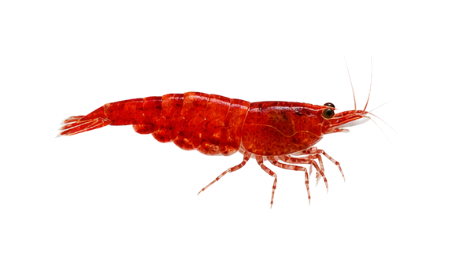
Neocaridina davidi var. Red
sp_0001边距 70px
76,114,402,150
主体完整度 1.0000
亮度/色差 75.1 / 154.5
/species-transparent/morph_batch_017_sheet_02_极火虾_Neocaridina_davidi_var._Red.png?v=cutfix5_20260601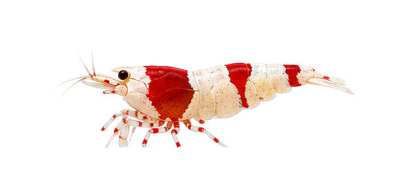
Caridina cantonensis var.
sp_0002边距 71px
99,91,410,124
主体完整度 0.9521
亮度/色差 142.2 / 106.7
/species-transparent/morph_batch_012_sheet_04_水晶虾_Caridina_cantonensis_var.png?v=cutfix5_20260601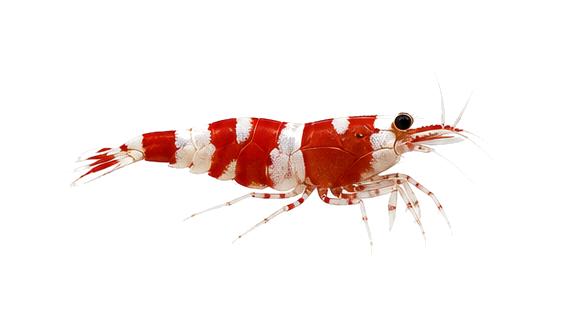
Caridina dennerli
sp_0003边距 76px
76,112,392,133
主体完整度 0.9753
亮度/色差 107.8 / 113.0
/species-transparent/base_missing_002_sheet_01_苏拉威西虾_Caridina_dennerli.png?v=cutfix5_20260601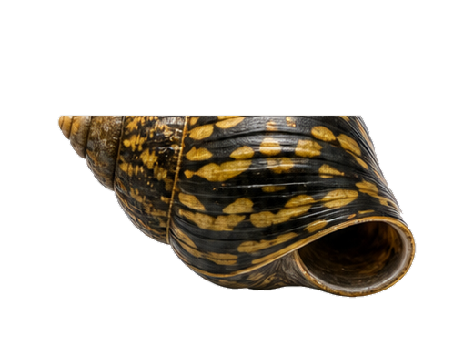
Vittina turrita
sp_0004边距 64px
64,127,393,200
主体完整度 1.0000
亮度/色差 69.2 / 43.5
/species-transparent/base_missing_007_sheet_03_洋葱螺_Vittina_turrita.png?v=cutfix5_20260601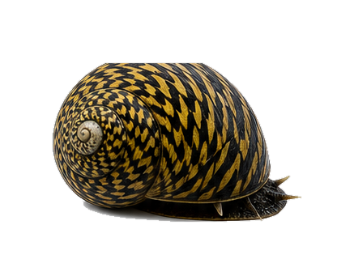
Clithon corona
sp_0005边距 65px
65,78,307,196
主体完整度 1.0000
亮度/色差 67.5 / 42.3
/species-transparent/base_missing_002_sheet_06_角螺_Clithon_corona.png?v=cutfix5_20260601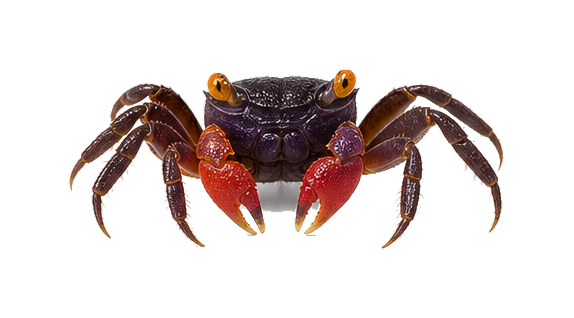
Geosesarma dennerle
sp_0006边距 69px
69,70,434,179
主体完整度 0.9994
亮度/色差 73.1 / 53.6
/species-transparent/base_missing_003_sheet_10_恶魔蟹_Geosesarma_dennerle.png?v=cutfix5_20260601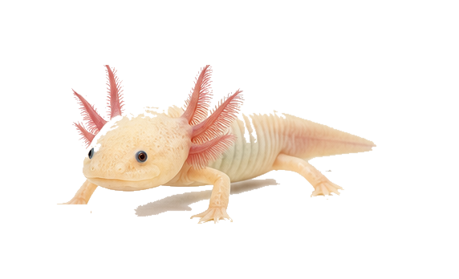
Ambystoma mexicanum
sp_0007边距 69px
71,81,398,198
主体完整度 0.9315
亮度/色差 194.0 / 68.1
/species-transparent/base_missing_001_sheet_03_六角恐龙_Ambystoma_mexicanum.png?v=cutfix5_20260601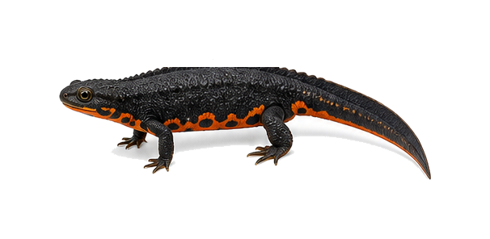
Cynops orientalis
sp_0008边距 73px
73,83,460,139
主体完整度 1.0000
亮度/色差 55.4 / 23.9
/species-transparent/base_missing_002_sheet_10_东方蝾螈_Cynops_orientalis.png?v=cutfix5_20260601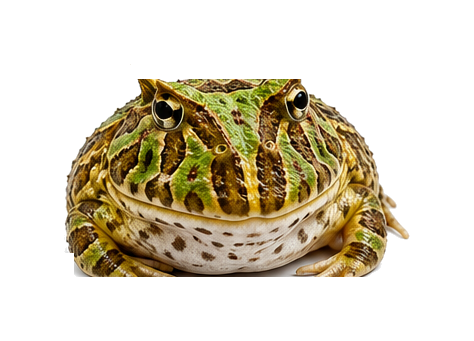
Ceratophrys ornata
sp_0009边距 45px
66,45,359,244
主体完整度 0.9993
亮度/色差 128.7 / 72.0
/species-transparent/base_missing_002_sheet_04_角蛙_Ceratophrys_ornata.png?v=cutfix5_20260601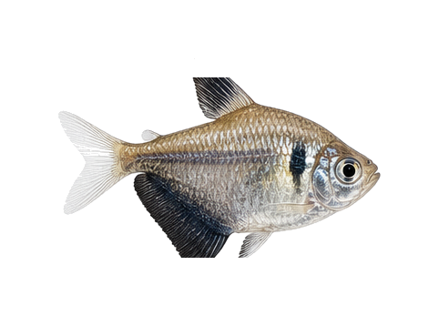
Gymnocorymbus ternetzi
sp_0010边距 44px
65,44,355,239
主体完整度 0.9987
亮度/色差 141.9 / 18.8
/species-transparent/batch_002_species_sheet_01_黑裙鱼_Gymnocorymbus_ternetzi.png?v=cutfix5_20260601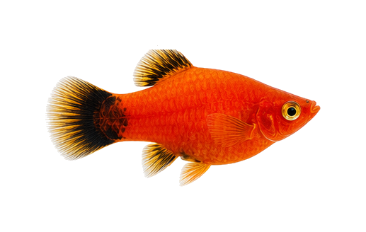
Xiphophorus maculatus
sp_0011边距 64px
69,70,384,191
主体完整度 1.0000
亮度/色差 91.5 / 169.7
/species-transparent/batch_002_species_sheet_02_月光鱼_Xiphophorus_maculatus.png?v=cutfix5_20260601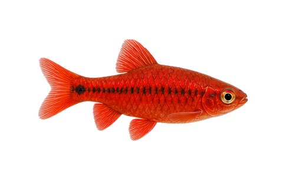
Puntius titteya
sp_0012边距 64px
65,67,356,172
主体完整度 1.0000
亮度/色差 83.6 / 170.1
/species-transparent/batch_002_species_sheet_05_樱桃灯_Puntius_titteya.png?v=cutfix5_20260601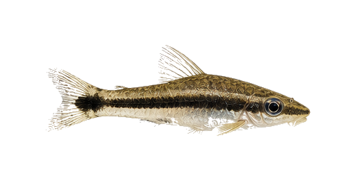
Otocinclus vittatus
sp_0013边距 64px
66,65,381,131
主体完整度 0.9873
亮度/色差 133.7 / 40.2
/species-transparent/batch_002_species_sheet_07_小精灵_Otocinclus_vittatus.png?v=cutfix5_20260601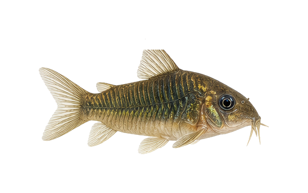
Corydoras aeneus
sp_0014边距 65px
69,82,376,170
主体完整度 0.9973
亮度/色差 126.8 / 48.6
/species-transparent/batch_002_species_sheet_08_咖啡鼠_Corydoras_aeneus.png?v=cutfix5_20260601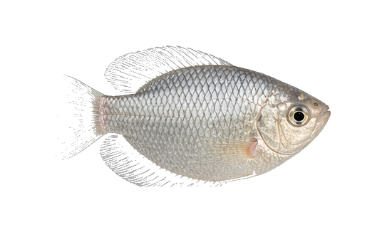
Helostoma temminkii
sp_0015边距 64px
78,64,386,198
主体完整度 0.9254
亮度/色差 176.5 / 13.9
/species-transparent/batch_003_species_sheet_01_接吻鱼_Helostoma_temminkii.png?v=cutfix5_20260601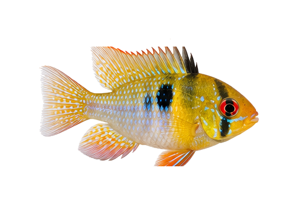
Mikrogeophagus ramirezi var. Gold
sp_0016边距 64px
72,77,354,198
主体完整度 0.9993
亮度/色差 157.7 / 101.1
/species-transparent/morph_batch_016_sheet_04_金波子_Mikrogeophagus_ramirezi_var._Gold.png?v=cutfix5_20260601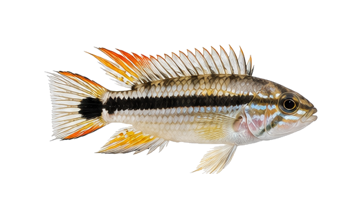
Apistogramma agassizii
sp_0017边距 64px
66,64,393,188
主体完整度 0.9970
亮度/色差 148.3 / 47.6
/species-transparent/batch_003_species_sheet_04_阿卡西短鲷_Apistogramma_agassizii.png?v=cutfix5_20260601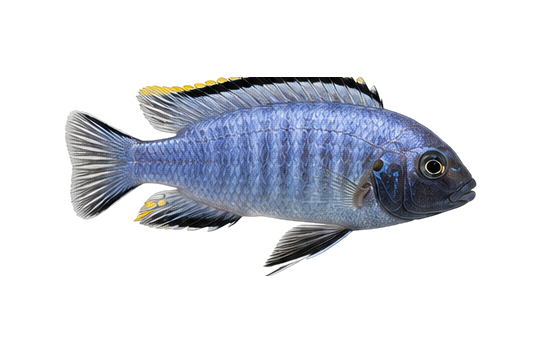
Chindongo socolofi
sp_0018边距 65px
65,77,412,199
主体完整度 0.9998
亮度/色差 119.9 / 41.4
/species-transparent/batch_003_species_sheet_05_蓝王子_Chindongo_socolofi.png?v=cutfix5_20260601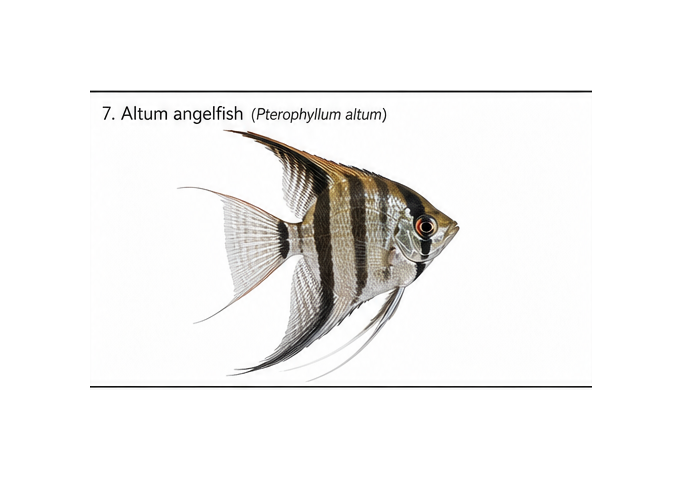
Pterophyllum altum
sp_0019边距 133px
134,133,414,213
主体完整度 0.9234
亮度/色差 146.4 / 16.7
/species-display/sp_0019_埃及神仙_display_white.png?v=displayfix_20260510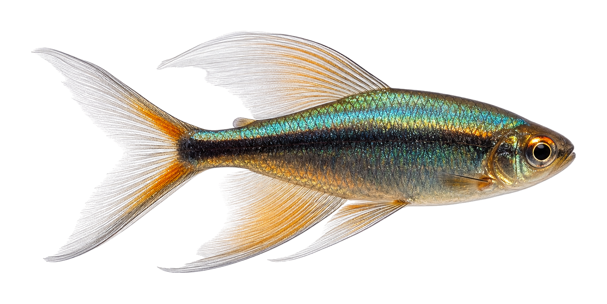
Phenacogrammus interruptus
sp_0020边距 82px
145,86,1429,631
主体完整度 0.9850
亮度/色差 128.7 / 51.2
/species-transparent/刚果美人_Phenacogrammus_interruptus_transparent_v4.png?v=transparentfix2_20260601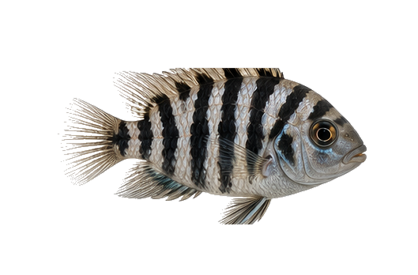
Amatitlania nigrofasciata var.
sp_0021边距 64px
73,86,391,198
主体完整度 0.9974
亮度/色差 110.2 / 15.8
/species-transparent/morph_batch_011_sheet_02_迷你鹦鹉鱼_Amatitlania_nigrofasciata_var.png?v=cutfix5_20260601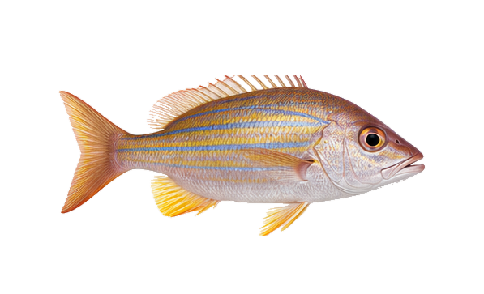
Lutjanus kasmira
sp_0022边距 72px
72,93,452,198
主体完整度 0.9995
亮度/色差 161.3 / 65.5
/species-transparent/batch_004_species_sheet_02_红利_Lutjanus_kasmira.png?v=cutfix5_20260601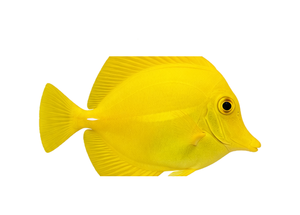
Zebrasoma flavescens
sp_0023边距 64px
64,93,367,198
主体完整度 1.0000
亮度/色差 190.3 / 222.6
/species-transparent/batch_004_species_sheet_04_黄倒吊_Zebrasoma_flavescens.png?v=cutfix5_20260601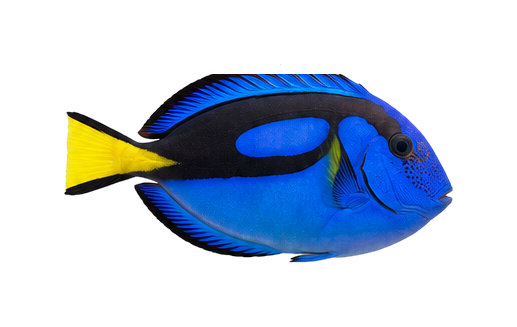
Paracanthurus hepatus
sp_0024边距 64px
64,74,389,188
主体完整度 1.0000
亮度/色差 74.5 / 135.8
/species-transparent/batch_004_species_sheet_05_蓝倒吊_Paracanthurus_hepatus.png?v=cutfix5_20260601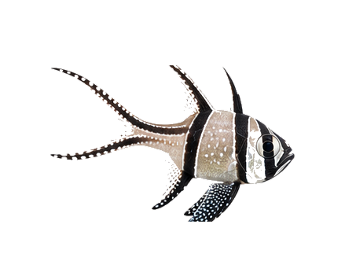
Pterapogon kauderni
sp_0025边距 64px
64,83,311,199
主体完整度 0.9914
亮度/色差 112.3 / 18.0
/species-transparent/batch_004_species_sheet_06_泗水玫瑰_Pterapogon_kauderni.png?v=cutfix5_20260601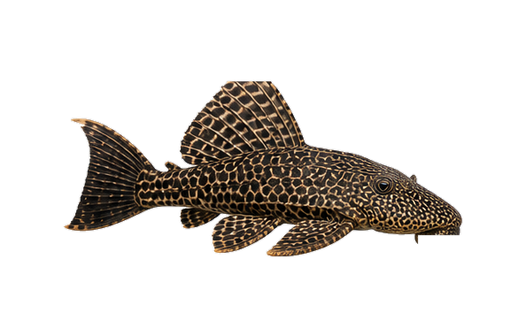
Hypostomus plecostomus
sp_0026边距 72px
72,92,450,198
主体完整度 1.0000
亮度/色差 69.5 / 32.4
/species-transparent/batch_004_species_sheet_08_清道夫_Hypostomus_plecostomus.png?v=cutfix5_20260601Neocaridina davidi var. Red
sp_0027边距 70px
76,114,402,150
主体完整度 1.0000
亮度/色差 75.1 / 154.5
/species-transparent/morph_batch_017_sheet_02_极火虾_Neocaridina_davidi_var._Red.png?v=cutfix5_20260601Caridina cantonensis var.
sp_0028边距 71px
99,91,410,124
主体完整度 0.9521
亮度/色差 142.2 / 106.7
/species-transparent/morph_batch_012_sheet_04_水晶虾_Caridina_cantonensis_var.png?v=cutfix5_20260601Caridina dennerli
sp_0029边距 76px
76,112,392,133
主体完整度 0.9753
亮度/色差 107.8 / 113.0
/species-transparent/base_missing_002_sheet_01_苏拉威西虾_Caridina_dennerli.png?v=cutfix5_20260601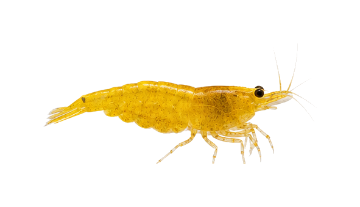
Neocaridina davidi var. Yellow
sp_0030边距 71px
73,118,417,150
主体完整度 0.9933
亮度/色差 172.7 / 181.3
/species-transparent/morph_batch_017_sheet_04_黄金米虾_Neocaridina_davidi_var._Yellow.png?v=cutfix5_20260601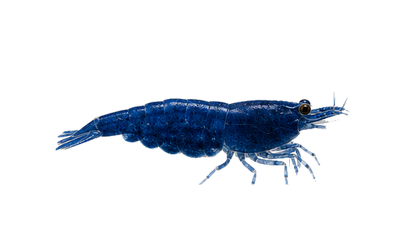
Neocaridina davidi var. Blue
sp_0031边距 74px
81,135,429,135
主体完整度 0.9997
亮度/色差 59.8 / 74.2
/species-transparent/morph_batch_017_sheet_05_蓝丝绒米虾_Neocaridina_davidi_var._Blue.png?v=cutfix5_20260601Vittina turrita
sp_0032边距 64px
64,127,393,200
主体完整度 1.0000
亮度/色差 69.2 / 43.5
/species-transparent/base_missing_007_sheet_03_洋葱螺_Vittina_turrita.png?v=cutfix5_20260601Clithon corona
sp_0033边距 65px
65,78,307,196
主体完整度 1.0000
亮度/色差 67.5 / 42.3
/species-transparent/base_missing_002_sheet_06_角螺_Clithon_corona.png?v=cutfix5_20260601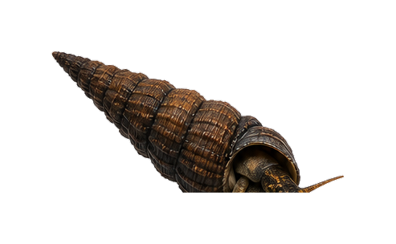
Tylomelania sp.
sp_0034边距 64px
64,64,364,176
主体完整度 1.0000
亮度/色差 55.2 / 31.6
/species-transparent/morph_batch_028_sheet_04_兔螺_Tylomelania_sp.png?v=cutfix5_20260601Geosesarma dennerle
sp_0035边距 69px
69,70,434,179
主体完整度 0.9994
亮度/色差 73.1 / 53.6
/species-transparent/base_missing_003_sheet_10_恶魔蟹_Geosesarma_dennerle.png?v=cutfix5_20260601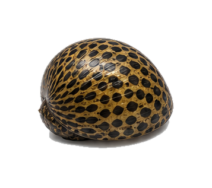
Neritina turrita var.
sp_0036边距 64px
64,64,228,186
主体完整度 1.0000
亮度/色差 79.3 / 41.8
/species-transparent/morph_batch_018_sheet_07_豹点螺_Neritina_turrita_var.png?v=cutfix5_20260601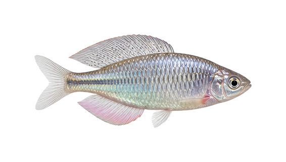
Acheilognathus macropterus
sp_0037边距 68px
88,68,410,181
主体完整度 0.9934
亮度/色差 170.8 / 18.1
/species-transparent/batch_004_species_sheet_09_大鳍鱊_Acheilognathus_macropterus.png?v=cutfix5_20260601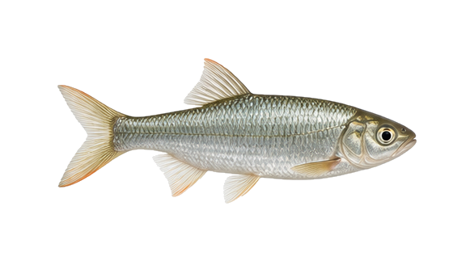
Opsariichthys bidens
sp_0038边距 71px
71,72,444,177
主体完整度 0.9984
亮度/色差 164.0 / 24.6
/species-transparent/batch_004_species_sheet_10_马口鱼_Opsariichthys_bidens.png?v=cutfix5_20260601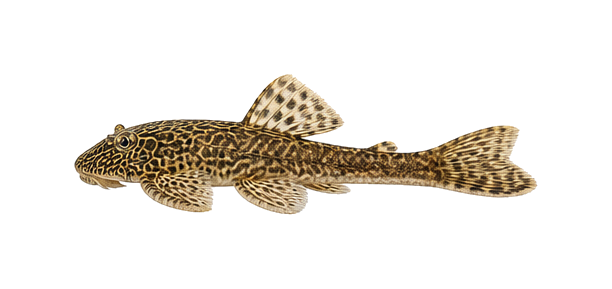
Pseudogastromyzon fangi
sp_0039边距 74px
74,74,463,140
主体完整度 1.0000
亮度/色差 121.0 / 62.1
/species-transparent/batch_005_species_sheet_01_方氏拟腹吸鳅_Pseudogastromyzon_fangi.png?v=cutfix5_20260601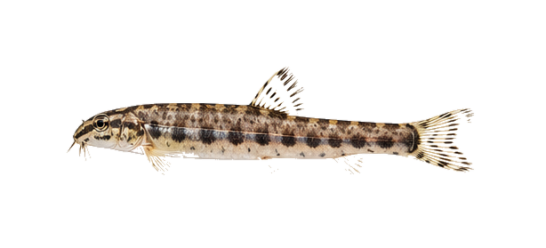
Cobitis sinensis
sp_0040边距 75px
75,75,458,122
主体完整度 0.9766
亮度/色差 134.4 / 44.6
/species-transparent/batch_005_species_sheet_02_中华花鳅_Cobitis_sinensis.png?v=cutfix5_20260601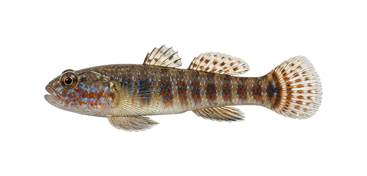
Abbottina rivularis
sp_0041边距 74px
74,75,466,147
主体完整度 0.9959
亮度/色差 120.8 / 45.6
/species-transparent/batch_005_species_sheet_03_棒花鱼_Abbottina_rivularis.png?v=cutfix5_20260601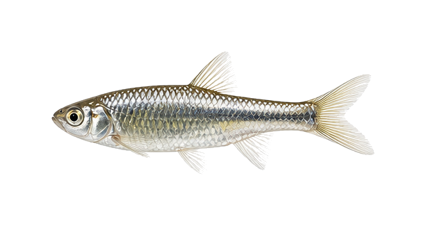
Pseudorasbora parva
sp_0042边距 74px
74,78,447,148
主体完整度 0.9931
亮度/色差 157.9 / 22.9
/species-transparent/batch_005_species_sheet_04_麦穗鱼_Pseudorasbora_parva.png?v=cutfix5_20260601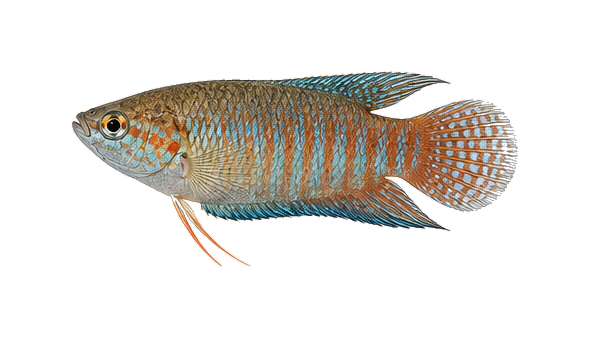
Macropodus ocellatus
sp_0043边距 71px
72,71,446,195
主体完整度 1.0000
亮度/色差 128.3 / 53.2
/species-transparent/batch_005_species_sheet_05_圆尾斗鱼_Macropodus_ocellatus.png?v=cutfix5_20260601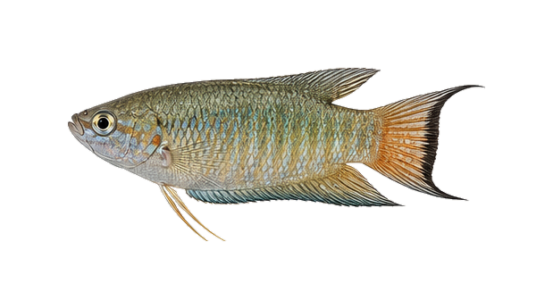
Macropodus spechti
sp_0044边距 75px
76,76,467,194
主体完整度 1.0000
亮度/色差 134.2 / 39.7
/species-transparent/batch_005_species_sheet_06_黑叉尾斗鱼_Macropodus_spechti.png?v=cutfix5_20260601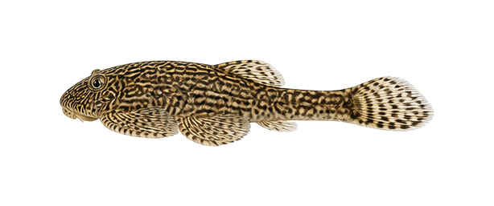
Sewellia lineolata
sp_0045边距 74px
74,75,464,108
主体完整度 0.9997
亮度/色差 112.7 / 52.7
/species-transparent/batch_005_species_sheet_07_越南爬岩鳅_Sewellia_lineolata.png?v=cutfix5_20260601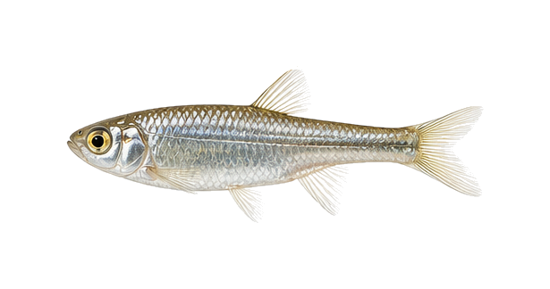
Aphyocypris chinensis
sp_0046边距 75px
75,78,451,161
主体完整度 0.9908
亮度/色差 165.5 / 26.6
/species-transparent/batch_005_species_sheet_08_中华细鲫_Aphyocypris_chinensis.png?v=cutfix5_20260601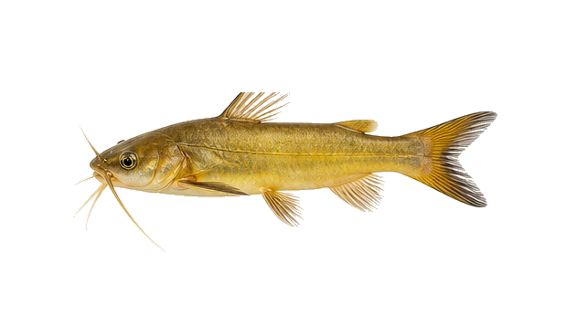
Pseudobagrus fulvidraco
sp_0047边距 76px
80,101,464,175
主体完整度 0.9990
亮度/色差 147.7 / 102.8
/species-transparent/batch_005_species_sheet_09_长臀鮠_Pseudobagrus_fulvidraco.png?v=cutfix5_20260601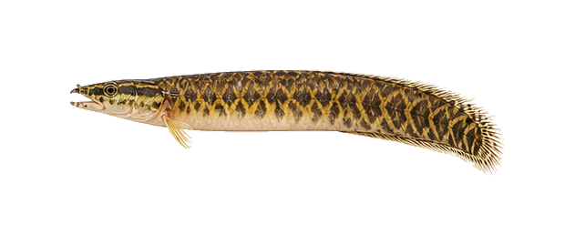
Mastacembelus armatus
sp_0048边距 77px
77,77,477,115
主体完整度 0.9997
亮度/色差 119.7 / 70.8
/species-transparent/batch_005_species_sheet_10_大刺鳅_Mastacembelus_armatus.png?v=cutfix5_20260601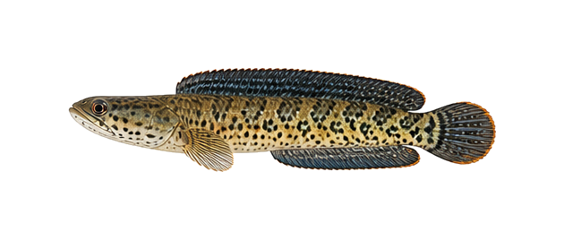
Channa asiatica
sp_0049边距 76px
77,76,477,116
主体完整度 0.9999
亮度/色差 99.4 / 40.2
/species-transparent/batch_006_species_sheet_01_珍珠赤雷龙_Channa_asiatica.png?v=cutfix5_20260601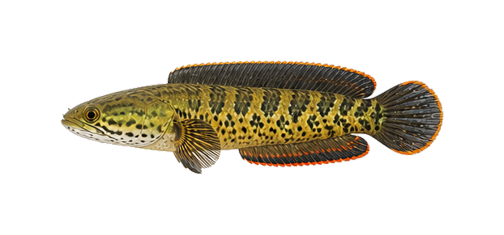
Channa barca
sp_0050边距 75px
75,75,472,140
主体完整度 1.0000
亮度/色差 99.2 / 61.5
/species-transparent/batch_006_species_sheet_02_巴卡雷龙_Channa_barca.png?v=cutfix5_20260601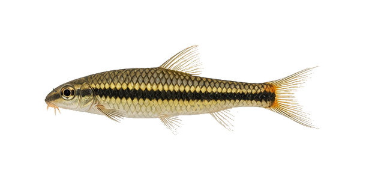
Acrossocheilus fasciatus
sp_0051边距 74px
74,75,458,150
主体完整度 0.9955
亮度/色差 133.2 / 54.5
/species-transparent/batch_006_species_sheet_03_光唇鱼_Acrossocheilus_fasciatus.png?v=cutfix5_20260601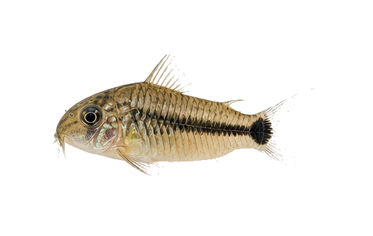
Corydoras hastatus
sp_0052边距 74px
74,77,367,170
主体完整度 0.9944
亮度/色差 137.9 / 52.3
/species-transparent/batch_006_species_sheet_04_月光鼠_Corydoras_hastatus.png?v=cutfix5_20260601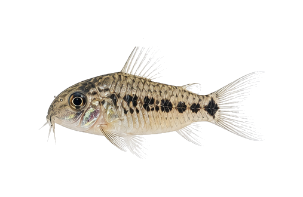
Corydoras pygmaeus
sp_0053边距 73px
73,78,338,171
主体完整度 0.9913
亮度/色差 147.0 / 36.0
/species-transparent/batch_006_species_sheet_05_精灵鼠_Corydoras_pygmaeus.png?v=cutfix5_20260601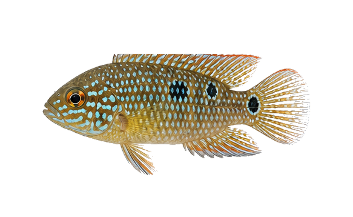
Hemichromis bimaculatus
sp_0054边距 70px
70,89,442,199
主体完整度 0.9988
亮度/色差 134.3 / 64.3
/species-transparent/batch_006_species_sheet_06_红宝石鱼_Hemichromis_bimaculatus.png?v=cutfix5_20260601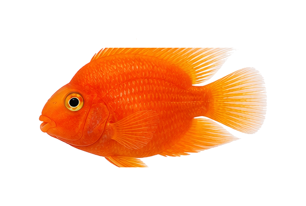
Cichlasoma var.
sp_0055边距 64px
64,79,372,198
主体完整度 1.0000
亮度/色差 127.8 / 211.6
/species-transparent/batch_006_species_sheet_07_金刚鹦鹉鱼_Cichlasoma.png?v=cutfix5_20260601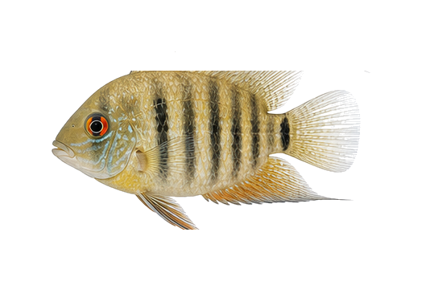
Heros severus
sp_0056边距 64px
64,88,366,198
主体完整度 0.9947
亮度/色差 151.5 / 61.7
/species-transparent/batch_006_species_sheet_08_菠萝鱼_Heros_severus.png?v=cutfix5_20260601Altolamprologus calvus
sp_0057边距 67px
67,83,387,198
主体完整度 0.9731
亮度/色差 191.2 / 18.0
/species-transparent/batch_006_species_sheet_09_珍珠虎_Altolamprologus_calvus.png?v=cutfix5_20260601Neolamprologus multifasciatus
sp_0058边距 67px
67,68,401,172
主体完整度 0.9951
亮度/色差 149.4 / 39.0
/species-transparent/batch_006_species_sheet_10_九间贝_Neolamprologus_multifasciatus.png?v=cutfix5_20260601Macropodus opercularis
sp_0059边距 72px
73,75,454,198
主体完整度 1.0000
亮度/色差 105.8 / 74.8
/species-transparent/batch_007_species_sheet_01_天堂鱼_Macropodus_opercularis.png?v=cutfix5_20260601Sphaerichthys osphromenoides
sp_0060边距 65px
66,81,407,198
主体完整度 1.0000
亮度/色差 80.3 / 60.2
/species-transparent/batch_007_species_sheet_02_巧克力曼龙_Sphaerichthys_osphromenoides.png?v=cutfix5_20260601Semaprochilodus insignis
sp_0061边距 69px
70,89,433,198
主体完整度 0.9977
亮度/色差 128.0 / 17.6
/species-transparent/batch_007_species_sheet_03_飞凤鱼_Semaprochilodus_insignis.png?v=cutfix5_20260601Moenkhausia sanctaefilomenae
sp_0062边距 39px
75,39,502,258
主体完整度 0.8897
亮度/色差 172.2 / 13.8
/species-image-overrides/sp_0062.png?v=visibility_20260611Carassius auratus var. Ranchu
sp_0063边距 64px
75,85,347,196
主体完整度 0.9952
亮度/色差 139.5 / 145.9
/species-transparent/batch_007_species_sheet_05_兰寿金鱼_Carassius_auratus.png?v=cutfix5_20260601Carassius auratus var. Oranda
sp_0064边距 64px
65,86,287,175
主体完整度 0.9994
亮度/色差 157.3 / 126.7
/species-transparent/morph_batch_003_sheet_08_泰狮金鱼_Carassius_auratus_var._Oranda.png?v=cutfix5_20260601Carassius auratus var.
sp_0065边距 65px
65,97,335,189
主体完整度 0.9953
亮度/色差 165.5 / 111.1
/species-transparent/morph_batch_003_sheet_09_蝶尾金鱼_Carassius_auratus_var.png?v=cutfix5_20260601Carassius auratus var.
sp_0066边距 64px
65,111,381,198
主体完整度 0.9973
亮度/色差 130.1 / 49.8
/species-transparent/morph_batch_003_sheet_10_鹤顶红金鱼_Carassius_auratus_var.png?v=cutfix5_20260601Carassius auratus var.
sp_0067边距 64px
102,84,318,198
主体完整度 1.0000
亮度/色差 155.1 / 157.5
/species-transparent/morph_batch_004_sheet_01_珠鳞金鱼_Carassius_auratus_var.png?v=cutfix5_20260601Carassius auratus var.
sp_0068边距 64px
80,74,367,197
主体完整度 0.9994
亮度/色差 141.7 / 199.7
/species-transparent/morph_batch_004_sheet_02_水泡金鱼_Carassius_auratus_var.png?v=cutfix5_20260601Cyprinus carpio var.
sp_0069边距 74px
74,80,436,185
主体完整度 0.9914
亮度/色差 145.2 / 81.0
/species-transparent/batch_007_species_sheet_06_红白锦鲤_Cyprinus_carpio.png?v=cutfix5_20260601Cyprinus carpio var. Longfin
sp_0070边距 46px
84,46,461,256
主体完整度 0.9979
亮度/色差 196.0 / 44.4
/species-transparent/morph_batch_007_sheet_03_蝴蝶鲤_Cyprinus_carpio_var._Longfin.png?v=cutfix5_20260601Hemianthus callitrichoides
sp_0071边距 71px
72,74,448,188
主体完整度 0.9976
亮度/色差 123.0 / 94.0
/species-transparent/batch_007_species_sheet_07_迷你矮珍珠_Hemianthus_callitrichoides.png?v=cutfix5_20260601Eleocharis acicularis
sp_0072边距 64px
68,69,332,192
主体完整度 0.9899
亮度/色差 139.9 / 86.6
/species-transparent/base_missing_003_sheet_04_牛毛毡_Eleocharis_acicularis.png?v=cutfix5_20260601Utricularia graminifolia
sp_0073边距 68px
72,109,424,198
主体完整度 0.9921
亮度/色差 182.2 / 69.1
/species-transparent/base_missing_006_sheet_10_挖耳草_Utricularia_graminifolia.png?v=cutfix5_20260601Bucephalandra sp.
sp_0074边距 64px
65,84,388,198
主体完整度 1.0000
亮度/色差 81.2 / 38.1
/species-transparent/morph_batch_012_sheet_02_辣椒榕_Bucephalandra_sp.png?v=cutfix5_20260601Anubias barteri var. nana
sp_0075边距 64px
64,100,370,199
主体完整度 1.0000
亮度/色差 96.6 / 82.4
/species-transparent/morph_batch_011_sheet_05_迷你榕_Anubias_barteri_var._nana.png?v=cutfix5_20260601Anubias barteri var. nana 'Petite'
sp_0076边距 64px
64,98,317,199
主体完整度 1.0000
亮度/色差 98.7 / 69.5
/species-transparent/morph_batch_002_sheet_05_小水榕_Anubias_barteri_var._nana_Petite.png?v=cutfix5_20260601Cabomba caroliniana
sp_0077边距 64px
65,106,312,198
主体完整度 0.9989
亮度/色差 176.7 / 83.8
/species-transparent/base_missing_001_sheet_09_绿菊_Cabomba_caroliniana.png?v=cutfix5_20260601Rotala rotundifolia 'Green'
sp_0078边距 64px
64,89,312,198
主体完整度 0.9995
亮度/色差 148.2 / 114.7
/species-transparent/base_missing_005_sheet_10_宫廷草_Rotala_rotundifolia_Green.png?v=cutfix5_20260601Rotala rotundifolia 'Red'
sp_0079边距 64px
64,67,296,198
主体完整度 0.9999
亮度/色差 117.5 / 99.1
/species-transparent/morph_batch_024_sheet_03_红宫廷_Rotala_rotundifolia_Red.png?v=cutfix5_20260601Vesicularia dubyana
sp_0080边距 64px
64,64,346,215
主体完整度 1.0000
亮度/色差 82.8 / 75.6
/species-transparent/batch_007_species_sheet_08_莫斯_三角莫斯_Vesicularia_dubyana.png?v=cutfix5_20260601Microsorum pteropus
sp_0081边距 68px
68,127,427,198
主体完整度 1.0000
亮度/色差 109.2 / 91.6
/species-transparent/base_missing_004_sheet_09_铁皇冠_Microsorum_pteropus.png?v=cutfix5_20260601Bolbitis heudelotii
sp_0082边距 67px
67,115,418,198
主体完整度 1.0000
亮度/色差 102.5 / 79.2
/species-transparent/morph_batch_011_sheet_10_黑木蕨_Bolbitis_heudelotii.png?v=cutfix5_20260601Cryptocoryne wendtii 'Green'
sp_0083边距 64px
64,127,354,198
主体完整度 0.9982
亮度/色差 106.0 / 68.3
/species-transparent/base_missing_002_sheet_09_绿温蒂椒草_Cryptocoryne_wendtii_Green.png?v=cutfix5_20260601Aponogeton crispus
sp_0084边距 71px
71,141,448,198
主体完整度 0.9980
亮度/色差 125.3 / 103.6
/species-transparent/batch_007_species_sheet_09_大浪草_Aponogeton_crispus.png?v=cutfix5_20260601Lemna minor
sp_0085边距 64px
64,78,403,197
主体完整度 0.9979
亮度/色差 162.2 / 125.2
/species-transparent/base_missing_004_sheet_02_绿浮萍_Lemna_minor.png?v=cutfix5_20260601Limnobium laevigatum
sp_0086边距 64px
64,83,339,198
主体完整度 0.9994
亮度/色差 152.5 / 102.9
/species-transparent/base_missing_004_sheet_03_圆心萍_Limnobium_laevigatum.png?v=cutfix5_20260601Egeria densa
sp_0087边距 66px
66,69,418,198
主体完整度 1.0000
亮度/色差 153.6 / 109.7
/species-transparent/base_missing_003_sheet_03_蜈蚣草_Egeria_densa.png?v=cutfix5_20260601Nymphaea lotus
sp_0088边距 64px
65,111,347,198
主体完整度 1.0000
亮度/色差 53.7 / 111.4
/species-transparent/morph_batch_018_sheet_09_睡莲_红荷根_Nymphaea_lotus.png?v=cutfix5_20260601Limnophila aquatica
sp_0089边距 64px
64,118,303,198
主体完整度 0.9996
亮度/色差 157.5 / 95.9
/species-transparent/batch_008_species_sheet_01_大宝塔_Limnophila_aquatica.png?v=cutfix5_20260601Microsorum pteropus 'Narrow'
sp_0090边距 64px
65,64,402,223
主体完整度 0.9998
亮度/色差 128.2 / 120.6
/species-transparent/morph_batch_016_sheet_03_细叶铁皇冠_Microsorum_pteropus_Narrow.png?v=cutfix5_20260601Staurogyne repens
sp_0091边距 69px
69,87,436,198
主体完整度 1.0000
亮度/色差 150.1 / 97.0
/species-transparent/base_missing_006_sheet_03_南美叉柱花_Staurogyne_repens.png?v=cutfix5_20260601Ludwigia glandulosa
sp_0092边距 64px
64,91,279,198
主体完整度 1.0000
亮度/色差 97.7 / 102.8
/species-transparent/morph_batch_015_sheet_04_红玫瑰_Ludwigia_glandulosa.png?v=cutfix5_20260601Micranthemum umbrosum
sp_0093边距 64px
65,76,386,198
主体完整度 0.9980
亮度/色差 148.6 / 110.5
/species-transparent/batch_008_species_sheet_02_十字珍珠_Micranthemum_umbrosum.png?v=cutfix5_20260601Echinodorus amazonicus
sp_0094边距 65px
65,87,409,198
主体完整度 1.0000
亮度/色差 131.7 / 118.4
/species-transparent/base_missing_003_sheet_01_大叶皇冠_Echinodorus_amazonicus.png?v=cutfix5_20260601Ludwigia inclinata var. verticillata
sp_0095边距 64px
66,79,251,199
主体完整度 0.9883
亮度/色差 178.6 / 66.7
/species-transparent/morph_batch_015_sheet_05_细叶太阳_Ludwigia_inclinata_var._verticillata.png?v=cutfix5_20260601Bacopa caroliniana
sp_0096边距 64px
65,73,254,198
主体完整度 0.9999
亮度/色差 166.7 / 93.1
/species-transparent/batch_008_species_sheet_03_虎耳草_Bacopa_caroliniana.png?v=cutfix5_20260601Myriophyllum aquaticum
sp_0097边距 64px
64,97,338,198
主体完整度 0.9996
亮度/色差 173.1 / 82.5
/species-transparent/base_missing_005_sheet_01_绿羽毛_Myriophyllum_aquaticum.png?v=cutfix5_20260601Blyxa japonica
sp_0098边距 64px
65,107,375,199
主体完整度 0.9998
亮度/色差 162.7 / 97.3
/species-transparent/base_missing_001_sheet_06_箦藻_Blyxa_japonica.png?v=cutfix5_20260601Riccia fluitans
sp_0099边距 66px
66,66,414,185
主体完整度 0.9998
亮度/色差 135.0 / 103.1
/species-transparent/batch_008_species_sheet_04_鹿角苔_Riccia_fluitans.png?v=cutfix5_20260601Vesicularia sp.
sp_0100边距 70px
70,70,441,272
主体完整度 0.9664
亮度/色差 108.5 / 74.0
/species-transparent/batch_008_species_sheet_05_青丝绒莫斯_Vesicularia.png?v=cutfix5_20260601Fissidens fontanus
sp_0101边距 66px
66,82,414,195
主体完整度 1.0000
亮度/色差 96.7 / 83.8
/species-transparent/base_missing_003_sheet_09_凤尾藓_Fissidens_fontanus.png?v=cutfix5_20260601Cryptocoryne aponogetifolia
sp_0102边距 64px
65,120,404,198
主体完整度 0.9983
亮度/色差 122.4 / 74.1
/species-transparent/base_missing_002_sheet_08_大蜻蜓椒草_Cryptocoryne_aponogetifolia.png?v=cutfix5_20260601Scleropages formosus
sp_0103边距 78px
79,78,488,185
主体完整度 0.9610
亮度/色差 142.5 / 86.2
/species-transparent/batch_008_species_sheet_06_金龙鱼_Scleropages_formosus.png?v=cutfix5_20260601Scleropages formosus var. Red
sp_0104边距 78px
79,78,486,155
主体完整度 1.0000
亮度/色差 113.2 / 105.6
/species-transparent/morph_batch_025_sheet_04_红龙鱼_Scleropages_formosus_var._Red.png?v=cutfix5_20260601Polypterus ornatipinnis
sp_0105边距 76px
76,77,478,123
主体完整度 1.0000
亮度/色差 125.7 / 65.5
/species-transparent/base_missing_005_sheet_08_恐龙鱼_大花_Polypterus_ornatipinnis.png?v=cutfix5_20260601Erpetoichthys calabaricus
sp_0106边距 73px
73,73,460,272
主体完整度 0.8822
亮度/色差 93.4 / 30.6
/species-transparent/base_missing_003_sheet_06_恐龙鱼_草绳_Erpetoichthys_calabaricus.png?v=cutfix5_20260601Semaprochilodus taeniurus
sp_0107边距 73px
73,73,456,271
主体完整度 0.9243
亮度/色差 143.5 / 13.5
/species-transparent/batch_008_species_sheet_07_飞凤鱼_国旗飞凤_Semaprochilodus_taeniurus.png?v=cutfix5_20260601Channa bleheri
sp_0108边距 77px
78,77,484,186
主体完整度 0.9557
亮度/色差 92.3 / 29.3
/species-transparent/batch_008_species_sheet_08_彩虹雷龙_Channa_bleheri.png?v=cutfix5_20260601Channa aurantimaculata
sp_0109边距 75px
75,75,471,130
主体完整度 1.0000
亮度/色差 64.2 / 27.3
/species-transparent/batch_008_species_sheet_09_眼镜蛇雷龙_Channa_aurantimaculata.png?v=cutfix5_20260601Channa lorti
sp_0110边距 78px
78,78,488,144
主体完整度 1.0000
亮度/色差 90.0 / 29.0
/species-transparent/batch_008_species_sheet_10_蓝月光雷龙_Channa_lorti.png?v=cutfix5_20260601Sawbwa resplendens
sp_0111边距 69px
96,71,410,145
主体完整度 0.9735
亮度/色差 142.1 / 39.4
/species-transparent/batch_009_species_sheet_01_亚洲红鼻_Sawbwa_resplendens.png?v=cutfix5_20260601Poropanchax normani
sp_0112边距 69px
70,72,433,198
主体完整度 0.9517
亮度/色差 127.5 / 55.9
/species-transparent/batch_009_species_sheet_02_蓝眼灯_Poropanchax_normani.png?v=cutfix5_20260601Epiplatys annulatus
sp_0113边距 69px
70,70,436,153
主体完整度 1.0000
亮度/色差 90.1 / 98.4
/species-transparent/batch_009_species_sheet_03_斑节鳉_Epiplatys_annulatus.png?v=cutfix5_20260601Hyphessobrycon amandae
sp_0114边距 64px
67,72,334,188
主体完整度 0.9938
亮度/色差 130.0 / 118.1
/species-transparent/batch_009_species_sheet_04_红莲灯_Hyphessobrycon_amandae.png?v=cutfix5_20260601Hyphessobrycon amapaensis
sp_0115边距 64px
78,65,392,185
主体完整度 0.9897
亮度/色差 146.6 / 29.9
/species-transparent/batch_009_species_sheet_05_琥珀灯_Hyphessobrycon_amapaensis.png?v=cutfix5_20260601Scleropages formosus
sp_0116边距 78px
79,78,488,185
主体完整度 0.9610
亮度/色差 142.5 / 86.2
/species-transparent/batch_008_species_sheet_06_金龙鱼_Scleropages_formosus.png?v=cutfix5_20260601Osteoglossum bicirrhosum
sp_0117边距 73px
140,73,480,157
主体完整度 1.0000
亮度/色差 143.9 / 30.2
/species-image-overrides/sp_0117.png?v=visibility_20260611Osteoglossum ferreirai
sp_0118边距 76px
77,76,474,149
主体完整度 1.0000
亮度/色差 51.8 / 21.2
/species-transparent/batch_009_species_sheet_07_黑龙鱼_Osteoglossum_ferreirai.png?v=cutfix5_20260601Pantodon buchholzi
sp_0119边距 67px
68,73,423,198
主体完整度 0.9954
亮度/色差 133.9 / 40.5
/species-transparent/batch_009_species_sheet_08_古代蝴蝶鱼_Pantodon_buchholzi.png?v=cutfix5_20260601Gymnotus carapo
sp_0120边距 74px
75,74,462,115
主体完整度 1.0000
亮度/色差 78.8 / 11.2
/species-transparent/batch_009_species_sheet_09_电鳗_观赏型_Gymnotus_carapo.png?v=cutfix5_20260601Peckoltia compta
sp_0121边距 72px
73,72,448,193
主体完整度 1.0000
亮度/色差 87.4 / 18.5
/species-transparent/morph_batch_020_sheet_04_黑斑马异型_L134_Peckoltia_compta.png?v=cutfix5_20260601Panaque nigrolineatus
sp_0122边距 72px
73,72,451,185
主体完整度 1.0000
亮度/色差 70.8 / 44.0
/species-transparent/morph_batch_019_sheet_06_金线绿皮异型_L190_Panaque_nigrolineatus.png?v=cutfix5_20260601Pterygoplichthys gibbiceps
sp_0123边距 72px
72,72,453,215
主体完整度 1.0000
亮度/色差 53.9 / 18.1
/species-transparent/batch_010_species_sheet_02_女王异型_L165_Pterygoplichthys_gibbiceps.png?v=cutfix5_20260601Ancistrus sp.
sp_0124边距 74px
74,74,466,184
主体完整度 0.9994
亮度/色差 74.5 / 44.7
/species-transparent/batch_010_species_sheet_03_蓝眼胡子_Ancistrus.png?v=cutfix5_20260601Hypancistrus inspector
sp_0125边距 64px
65,95,402,198
主体完整度 0.9845
亮度/色差 121.0 / 18.1
/species-transparent/morph_batch_010_sheet_10_雪球异型_L102_Hypancistrus_inspector.png?v=cutfix5_20260601Chromobotia macracanthus
sp_0126边距 69px
70,69,435,169
主体完整度 0.9999
亮度/色差 106.3 / 103.0
/species-transparent/batch_010_species_sheet_05_三间鼠_Chromobotia_macracanthus.png?v=cutfix5_20260601Botia almorhae
sp_0127边距 72px
76,73,446,147
主体完整度 0.9999
亮度/色差 117.6 / 64.9
/species-transparent/batch_010_species_sheet_06_巴基斯坦鼠_Botia_almorhae.png?v=cutfix5_20260601Beaufortia kweichowensis
sp_0128边距 72px
72,72,453,114
主体完整度 1.0000
亮度/色差 106.3 / 53.5
/species-transparent/batch_010_species_sheet_07_吸鳅_中国爬岩鳅_Beaufortia_kweichowensis.png?v=cutfix5_20260601Zacco platypus
sp_0129边距 71px
75,71,432,164
主体完整度 0.9977
亮度/色差 157.1 / 27.4
/species-transparent/batch_010_species_sheet_08_宽鳍鱲_溪流之王_Zacco_platypus.png?v=cutfix5_20260601Opsariichthys bidens
sp_0130边距 71px
71,72,444,177
主体完整度 0.9984
亮度/色差 164.0 / 24.6
/species-transparent/batch_004_species_sheet_10_马口鱼_Opsariichthys_bidens.png?v=cutfix5_20260601Mastacembelus armatus
sp_0131边距 77px
77,77,477,115
主体完整度 0.9997
亮度/色差 119.7 / 70.8
/species-transparent/batch_005_species_sheet_10_大刺鳅_Mastacembelus_armatus.png?v=cutfix5_20260601Parambassis ranga
sp_0132边距 79px
110,79,376,196
主体完整度 0.9758
亮度/色差 147.7 / 19.3
/species-image-overrides/sp_0132.png?v=visibility_20260611Glossolepis incisus
sp_0133边距 68px
68,69,430,157
主体完整度 1.0000
亮度/色差 128.3 / 95.1
/species-transparent/batch_010_species_sheet_10_红苹果美人_Glossolepis_incisus.png?v=cutfix5_20260601Iriatherina werneri
sp_0134边距 71px
74,71,443,155
主体完整度 0.9680
亮度/色差 164.9 / 44.1
/species-transparent/batch_011_species_sheet_01_燕子美人_Iriatherina_werneri.png?v=cutfix5_20260601Pseudomugil furcatus
sp_0135边距 68px
69,69,425,140
主体完整度 0.9961
亮度/色差 155.0 / 32.5
/species-transparent/batch_011_species_sheet_02_霓虹燕子_Pseudomugil_furcatus.png?v=cutfix5_20260601Sphaerichthys osphromenoides
sp_0136边距 65px
66,81,407,198
主体完整度 1.0000
亮度/色差 80.3 / 60.2
/species-transparent/batch_007_species_sheet_02_巧克力曼龙_Sphaerichthys_osphromenoides.png?v=cutfix5_20260601Semaprochilodus insignis
sp_0137边距 69px
70,89,433,198
主体完整度 0.9977
亮度/色差 128.0 / 17.6
/species-transparent/batch_007_species_sheet_03_飞凤鱼_Semaprochilodus_insignis.png?v=cutfix5_20260601Leporinus fasciatus
sp_0138边距 73px
73,86,457,196
主体完整度 1.0000
亮度/色差 144.0 / 69.3
/species-transparent/batch_011_species_sheet_03_黑带好汉_Leporinus_fasciatus.png?v=cutfix5_20260601Piaractus brachypomus
sp_0139边距 67px
67,89,419,199
主体完整度 1.0000
亮度/色差 78.4 / 37.4
/species-transparent/batch_011_species_sheet_05_淡水白鲳_Piaractus_brachypomus.png?v=cutfix5_20260601Serrasalmus rhombeus
sp_0140边距 64px
64,81,391,199
主体完整度 1.0000
亮度/色差 106.1 / 46.8
/species-transparent/batch_011_species_sheet_06_黑斑水虎_Serrasalmus_rhombeus.png?v=cutfix5_20260601Hyphessobrycon pulchripinnis var.
sp_0141边距 143px
245,155,1148,641
主体完整度 0.9997
亮度/色差 173.3 / 114.2
/species-generated/replacements/sp_0141_sweet_lemon_tetra_cutout_v1.png?v=rework_20260601Poecilia sphenops var.
sp_0142边距 64px
80,80,384,198
主体完整度 0.9959
亮度/色差 148.8 / 12.8
/species-transparent/morph_batch_022_sheet_01_球鱼_玛丽变种_Poecilia_sphenops_var.png?v=cutfix5_20260601Poecilia reticulata var.
sp_0143边距 65px
65,65,409,189
主体完整度 0.9994
亮度/色差 100.5 / 91.9
/species-transparent/morph_batch_021_sheet_04_红草尾孔雀鱼_Poecilia_reticulata_var.png?v=cutfix5_20260601Poecilia reticulata var.
sp_0144边距 65px
66,66,407,180
主体完整度 0.9990
亮度/色差 114.5 / 41.3
/species-transparent/morph_batch_021_sheet_05_蓝草尾孔雀鱼_Poecilia_reticulata_var.png?v=cutfix5_20260601Poecilia reticulata var. Dumbo
sp_0145边距 66px
69,67,413,172
主体完整度 0.9995
亮度/色差 130.0 / 34.5
/species-transparent/morph_batch_021_sheet_06_大耳孔雀鱼_Poecilia_reticulata_var._Dumbo.png?v=cutfix5_20260601Mikrogeophagus ramirezi var. Platinum
sp_0146边距 32px
56,32,350,201
主体完整度 0.7807
亮度/色差 165.0 / 37.9
/species-image-overrides/sp_0146.png?v=visibility_20260611Amatitlania nigrofasciata var. Blue
sp_0147边距 66px
67,66,414,190
主体完整度 0.9996
亮度/色差 118.1 / 94.8
/species-transparent/morph_batch_001_sheet_03_蓝宝鹦鹉鱼_Amatitlania_nigrofasciata_var._Blue.png?v=cutfix5_20260601Amatitlania nigrofasciata var. White
sp_0148边距 78px
101,78,330,189
主体完整度 0.8155
亮度/色差 143.3 / 16.0
/species-image-overrides/sp_0148.png?v=visibility_20260611Carassius auratus var. Panda
sp_0149边距 64px
66,64,345,256
主体完整度 0.9930
亮度/色差 105.5 / 17.6
/species-transparent/morph_batch_004_sheet_03_熊猫金鱼_Carassius_auratus_var._Panda.png?v=cutfix5_20260601Carassius auratus var. Oranda
sp_0150边距 64px
78,76,332,198
主体完整度 0.9986
亮度/色差 136.6 / 153.4
/species-transparent/morph_batch_004_sheet_04_短尾狮头金鱼_Carassius_auratus_var._Oranda.png?v=cutfix5_20260601Gymnocorymbus ternetzi var. Color morph
sp_0151边距 48px
80,92,632,368
主体完整度 0.9942
亮度/色差 103.4 / 140.7
/species-generated/fish/sp_0450_colored_skirt_tetra.pngDanio rerio var. GloFish
sp_0152边距 71px
71,72,438,156
主体完整度 0.9989
亮度/色差 183.9 / 122.3
/species-transparent/morph_batch_007_sheet_05_荧光斑马鱼_Danio_rerio_var._GloFish.png?v=cutfix5_20260601Trichopodus leerii var. Balloon
sp_0153边距 64px
116,66,340,196
主体完整度 0.9674
亮度/色差 174.7 / 31.5
/species-transparent/morph_batch_027_sheet_04_球形珍珠马甲_Trichopodus_leerii_var._Balloon.png?v=cutfix5_20260601Hemigrammus bleheri var.
sp_0154边距 69px
69,83,419,137
主体完整度 0.9906
亮度/色差 144.3 / 39.0
/species-transparent/morph_batch_010_sheet_02_红鼻灯_改良_Hemigrammus_bleheri_var.png?v=cutfix5_20260601Paracheirodon innesi var.
sp_0155边距 70px
118,74,394,190
主体完整度 0.9836
亮度/色差 116.9 / 70.2
/species-transparent/morph_batch_020_sheet_01_长鳍红绿灯_Paracheirodon_innesi_var.png?v=cutfix5_20260601Trichopodus trichopterus var. Platinum
sp_0156边距 43px
75,43,502,271
主体完整度 0.9060
亮度/色差 200.3 / 11.9
/species-image-overrides/sp_0156.png?v=visibility_20260611Mikrogeophagus ramirezi var. Blue
sp_0157边距 64px
72,78,364,199
主体完整度 0.9941
亮度/色差 142.6 / 59.7
/species-transparent/morph_batch_016_sheet_06_蓝宝石短鲷_Mikrogeophagus_ramirezi_var._Blue.png?v=cutfix5_20260601Xiphophorus hellerii var.
sp_0158边距 70px
70,71,441,172
主体完整度 1.0000
亮度/色差 87.5 / 170.5
/species-transparent/morph_batch_028_sheet_10_红苹果剑尾_Xiphophorus_hellerii_var.png?v=cutfix5_20260601Ancistrus sp. Gold
sp_0159边距 75px
75,76,469,186
主体完整度 0.9967
亮度/色差 183.2 / 159.5
/species-transparent/morph_batch_001_sheet_06_黄金胡子_异型变种_Ancistrus_sp._Gold.png?v=cutfix5_20260601Ancistrus sp. Longfin Platinum
sp_0160边距 45px
75,45,502,297
主体完整度 0.9052
亮度/色差 195.4 / 41.8
/species-image-overrides/sp_0160.png?v=visibility_20260611Poecilia sphenops var. Chocolate
sp_0161边距 66px
68,86,412,198
主体完整度 0.9985
亮度/色差 77.9 / 40.5
/species-transparent/morph_batch_022_sheet_02_巧克力皮球_Poecilia_sphenops_var._Chocolate.png?v=cutfix5_20260601Carassius auratus var.
sp_0162边距 64px
71,101,396,184
主体完整度 1.0000
亮度/色差 124.6 / 212.5
/species-transparent/morph_batch_004_sheet_05_红草鱼_Carassius_auratus_var.png?v=cutfix5_20260601Cyprinus carpio var. Kohaku
sp_0163边距 75px
75,122,386,140
主体完整度 0.9477
亮度/色差 133.3 / 115.6
/species-transparent/morph_batch_007_sheet_04_鸿运当头锦鲤_Cyprinus_carpio_var._Kohaku.png?v=cutfix5_20260601Neocaridina davidi var. Black
sp_0164边距 80px
80,97,1347,756
主体完整度 0.9979
亮度/色差 73.1 / 36.4
/species-generated/replacements/sp_0459_black_neocaridina_cutout_v1.png?v=rework_20260601Neocaridina davidi var. Yellow Line
sp_0165边距 71px
74,109,426,141
主体完整度 0.9928
亮度/色差 169.4 / 96.4
/species-transparent/morph_batch_017_sheet_07_黄金背米虾_Neocaridina_davidi_var._Yellow_Line.png?v=cutfix5_20260601Neocaridina davidi var. Fire Red
sp_0166边距 72px
78,113,413,149
主体完整度 0.9998
亮度/色差 76.7 / 153.3
/species-transparent/morph_batch_017_sheet_08_极火米虾_高等级_Neocaridina_davidi_var._Fire_Red.png?v=cutfix5_20260601Hemigrammus bleheri var. Balloon
sp_0167边距 184px
225,184,1127,647
主体完整度 0.9851
亮度/色差 156.2 / 36.3
/species-generated/replacements/sp_0167_balloon_rummy_nose_cutout_v1.png?v=rework_20260601Poecilia latipinna var. Gold
sp_0168边距 66px
69,66,411,197
主体完整度 0.9996
亮度/色差 165.3 / 176.0
/species-transparent/batch_011_species_sheet_09_金玛丽_Poecilia_latipinna.png?v=cutfix5_20260601Poecilia latipinna var. Silver
sp_0169边距 40px
75,40,502,247
主体完整度 0.9311
亮度/色差 203.3 / 6.2
/species-image-overrides/sp_0169.png?v=visibility_20260611Poecilia reticulata var. Full Black
sp_0170边距 65px
66,65,410,175
主体完整度 1.0000
亮度/色差 31.0 / 4.7
/species-transparent/morph_batch_021_sheet_07_黑金刚孔雀鱼_Poecilia_reticulata_var._Full_Black.png?v=cutfix5_20260601Tanichthys albonubes var. Albino
sp_0171边距 74px
128,74,435,165
主体完整度 0.9807
亮度/色差 155.1 / 75.0
/species-image-overrides/sp_0171.png?v=visibility_20260611Tanichthys albonubes var. Longfin
sp_0172边距 74px
74,74,428,185
主体完整度 0.9927
亮度/色差 152.7 / 46.8
/species-transparent/morph_batch_026_sheet_09_长鳍白云金丝_Tanichthys_albonubes_var._Longfin.png?v=cutfix5_20260601Salminus brasiliensis var.
sp_0173边距 74px
74,74,465,186
主体完整度 1.0000
亮度/色差 156.7 / 105.2
/species-transparent/batch_011_species_sheet_10_黄金河虎_Salminus_brasiliensis.png?v=cutfix5_20260601
Gymnocorymbus ternetzi var. Albino
sp_0174边距 47px
75,47,502,295
主体完整度 0.9063
亮度/色差 198.3 / 50.5
/species-image-overrides/sp_0174.png?v=visibility_20260611Pterophyllum scalare var. Red
sp_0175边距 90px
90,90,502,301
主体完整度 0.8773
亮度/色差 109.0 / 133.9
/species-display/sp_0175_血钻神仙_display_white.png?v=displayfix_20260510Pterophyllum scalare var. Marble
sp_0176边距 90px
90,94,502,295
主体完整度 0.8836
亮度/色差 111.4 / 13.5
/species-display/sp_0176_黑白大理石神仙_display_white.png?v=displayfix_20260510Pterophyllum scalare var. Blue
sp_0177边距 90px
90,91,502,295
主体完整度 0.8542
亮度/色差 144.4 / 32.9
/species-display/sp_0177_红眼蓝钻神仙_display_white.png?v=displayfix_20260510Pterophyllum scalare var. Panda
sp_0178边距 90px
90,102,502,289
主体完整度 0.8610
亮度/色差 106.8 / 12.8
/species-display/sp_0178_熊猫神仙_display_white.png?v=displayfix_20260510Trichopodus trichopterus var. Balloon
sp_0179边距 66px
67,71,412,196
主体完整度 0.9999
亮度/色差 163.6 / 33.4
/species-transparent/morph_batch_027_sheet_09_球形曼龙_蓝_金_Trichopodus_trichopterus_var._Balloon.png?v=cutfix5_20260601Carassius auratus var. Telescopes
sp_0180边距 64px
87,96,339,185
主体完整度 0.9993
亮度/色差 149.8 / 150.7
/species-transparent/morph_batch_004_sheet_06_龙睛金鱼_Carassius_auratus_var._Telescopes.png?v=cutfix5_20260601Gnathonemus petersii
sp_0181边距 70px
70,88,440,198
主体完整度 0.9987
亮度/色差 160.6 / 9.5
/species-transparent/batch_012_species_sheet_01_象鼻鱼_Gnathonemus_petersii.png?v=cutfix5_20260601Panaque sp. L191
sp_0182边距 71px
71,71,444,184
主体完整度 1.0000
亮度/色差 63.2 / 34.2
/species-transparent/morph_batch_019_sheet_05_蓝眼异型_L191_Panaque_sp._L191.png?v=cutfix5_20260601Xanthichthys mento
sp_0183边距 66px
66,68,414,198
主体完整度 0.9995
亮度/色差 135.7 / 40.3
/species-transparent/morph_batch_028_sheet_07_红纹拟鳞鲀_红尾炮弹_Xanthichthys_mento.png?v=cutfix5_20260601Centropyge heraldi
sp_0184边距 64px
64,77,339,198
主体完整度 1.0000
亮度/色差 157.9 / 203.5
/species-transparent/batch_012_species_sheet_04_黄头仙_Centropyge_heraldi.png?v=cutfix5_20260601Pomacanthus annularis
sp_0185边距 64px
65,75,360,199
主体完整度 1.0000
亮度/色差 58.1 / 79.4
/species-transparent/batch_012_species_sheet_05_蓝环神仙_Pomacanthus_annularis.png?v=cutfix5_20260601Chaetodon auriga
sp_0186边距 64px
81,64,322,191
主体完整度 0.9715
亮度/色差 146.9 / 104.4
/species-transparent/batch_012_species_sheet_06_人字蝶_Chaetodon_auriga.png?v=cutfix5_20260601Chrysiptera cyanea
sp_0187边距 64px
67,72,329,198
主体完整度 0.9999
亮度/色差 90.0 / 160.1
/species-transparent/batch_012_species_sheet_07_蓝魔鬼_Chrysiptera_cyanea.png?v=cutfix5_20260601Lysmata amboinensis
sp_0188边距 64px
70,97,276,166
主体完整度 0.9839
亮度/色差 170.8 / 109.9
/species-transparent/base_missing_004_sheet_06_清洁虾_医生虾_Lysmata_amboinensis.png?v=cutfix5_20260601Thor amboinensis
sp_0189边距 70px
136,80,353,195
主体完整度 0.9742
亮度/色差 143.8 / 112.5
/species-transparent/base_missing_006_sheet_06_性感虾_Thor_amboinensis.png?v=cutfix5_20260601Lysmata boggesi
sp_0190边距 65px
77,98,334,156
主体完整度 0.8234
亮度/色差 158.5 / 79.5
/species-transparent/base_missing_004_sheet_07_薄荷虾_Lysmata_boggesi.png?v=cutfix5_20260601Paguristes cadenati
sp_0191边距 64px
64,64,392,193
主体完整度 0.9997
亮度/色差 112.2 / 93.8
/species-transparent/morph_batch_019_sheet_03_寄居蟹_红脚_Paguristes_cadenati.png?v=cutfix5_20260601Entacmaea quadricolor
sp_0192边距 64px
64,64,406,198
主体完整度 0.9508
亮度/色差 133.9 / 84.4
/species-transparent/base_missing_003_sheet_05_海葵_奶嘴_Entacmaea_quadricolor.png?v=cutfix5_20260601Stichodactyla haddoni
sp_0193边距 67px
68,88,417,198
主体完整度 1.0000
亮度/色差 131.1 / 82.0
/species-transparent/base_missing_006_sheet_04_地毯海葵_Stichodactyla_haddoni.png?v=cutfix5_20260601Protula bispiralis
sp_0194边距 64px
69,85,323,198
主体完整度 0.9667
亮度/色差 136.0 / 59.1
/species-transparent/batch_012_species_sheet_08_管虫_硬管_Protula_bispiralis.png?v=cutfix5_20260601Astropecten polyacanthus
sp_0195边距 64px
65,93,360,198
主体完整度 0.9996
亮度/色差 141.0 / 44.2
/species-transparent/batch_012_species_sheet_09_海星_翻砂_Astropecten_polyacanthus.png?v=cutfix5_20260601Sahyadria denisonii var. Gold
sp_0196边距 66px
66,66,413,191
主体完整度 0.9999
亮度/色差 152.9 / 131.4
/species-transparent/morph_batch_024_sheet_06_一眉道人_黄金型_Sahyadria_denisonii_var._Gold.png?v=cutfix5_20260601Channa stewartii
sp_0197边距 75px
75,75,470,156
主体完整度 1.0000
亮度/色差 76.6 / 33.4
/species-transparent/batch_012_species_sheet_10_蓝宝石雷龙_Channa_stewartii.png?v=cutfix5_20260601Channa diplogramma
sp_0198边距 75px
76,75,471,135
主体完整度 1.0000
亮度/色差 104.4 / 38.2
/species-transparent/batch_013_species_sheet_01_红宝石雷龙_Channa_diplogramma.png?v=cutfix5_20260601Badis badis
sp_0199边距 65px
66,75,409,198
主体完整度 1.0000
亮度/色差 120.6 / 60.5
/species-transparent/batch_013_species_sheet_02_珍珠麒麟_Badis_badis.png?v=cutfix5_20260601Dario dario
sp_0200边距 71px
71,71,443,200
主体完整度 1.0000
亮度/色差 70.6 / 125.1
/species-transparent/batch_013_species_sheet_03_变色鱼_喷火麒麟_Dario_dario.png?v=cutfix5_20260601Leporacanthicus cf. galaxias
sp_0201边距 73px
73,89,461,198
主体完整度 1.0000
亮度/色差 59.4 / 24.0
/species-transparent/morph_batch_015_sheet_02_黑白双星异型_L240_Leporacanthicus_cf._galaxias.png?v=cutfix5_20260601Scobinancistrus aureatus
sp_0202边距 70px
70,83,438,198
主体完整度 1.0000
亮度/色差 159.0 / 159.2
/species-transparent/morph_batch_025_sheet_10_黄金美洲豹异型_L014_Scobinancistrus_aureatus.png?v=cutfix5_20260601Poecilia sphenops var. Green
sp_0203边距 65px
65,79,410,198
主体完整度 0.9970
亮度/色差 127.4 / 68.1
/species-transparent/morph_batch_022_sheet_03_绿赏皮球_Poecilia_sphenops_var._Green.png?v=cutfix5_20260601Hemigrammus bleheri var.
sp_0204边距 64px
65,75,391,198
主体完整度 0.9993
亮度/色差 79.1 / 13.6
/species-transparent/morph_batch_010_sheet_04_黑金刚红鼻剪刀_Hemigrammus_bleheri_var.png?v=cutfix5_20260601Hyphessobrycon herbertaxelrodi var.
sp_0205边距 69px
69,76,401,174
主体完整度 0.9917
亮度/色差 123.1 / 23.7
/species-transparent/batch_013_species_sheet_06_紫艳红莲灯_Hyphessobrycon_herbertaxelrodi.png?v=cutfix5_20260601Paracheirodon innesi var. Diamond
sp_0206边距 68px
101,80,395,198
主体完整度 0.9761
亮度/色差 122.8 / 73.3
/species-transparent/morph_batch_020_sheet_02_电光红绿灯_Paracheirodon_innesi_var._Diamond.png?v=cutfix5_20260601Gymnocorymbus ternetzi var. White
sp_0207边距 45px
71,45,459,284
主体完整度 0.9562
亮度/色差 187.3 / 8.8
/species-image-overrides/sp_0207.png?v=visibility_20260611Aphyocharax anisitsi var. Balloon
sp_0208边距 66px
66,89,396,195
主体完整度 0.9964
亮度/色差 142.0 / 70.8
/species-transparent/batch_013_species_sheet_07_球形红十字_Aphyocharax_anisitsi.png?v=cutfix5_20260601Poecilia latipinna var. Blood
sp_0209边距 64px
64,69,385,198
主体完整度 1.0000
亮度/色差 68.2 / 203.7
/species-transparent/morph_batch_021_sheet_01_血玛丽鱼_Poecilia_latipinna_var._Blood.png?v=cutfix5_20260601Pangio kuhlii var.
sp_0210边距 74px
76,74,454,80
主体完整度 0.9998
亮度/色差 88.2 / 64.9
/species-transparent/batch_013_species_sheet_08_黄金眼镜蛇蛇鱼_Pangio_kuhlii.png?v=cutfix5_20260601Thorichthys meeki var.
sp_0211边距 68px
68,101,423,198
主体完整度 0.9959
亮度/色差 140.6 / 55.3
/species-transparent/batch_013_species_sheet_09_大点火口_Thorichthys_meeki.png?v=cutfix5_20260601Hemigrammus rodwayi var.
sp_0212边距 70px
70,100,412,150
主体完整度 0.9955
亮度/色差 138.7 / 47.5
/species-transparent/batch_013_species_sheet_10_蓝眼金灯_Hemigrammus_rodwayi.png?v=cutfix5_20260601Crossocheilus langei var. Gold
sp_0213边距 75px
76,75,470,157
主体完整度 0.9996
亮度/色差 160.7 / 119.4
/species-transparent/morph_batch_006_sheet_10_黑线飞狐_金型_Crossocheilus_langei_var._Gold.png?v=cutfix5_20260601Pelvicachromis pulcher var. Albino
sp_0214边距 79px
120,79,411,195
主体完整度 0.9888
亮度/色差 154.7 / 39.4
/species-image-overrides/sp_0214.png?v=visibility_20260611Sahyadria denisonii var. Longfin
sp_0215边距 72px
72,77,442,195
主体完整度 0.9748
亮度/色差 146.9 / 66.0
/species-transparent/morph_batch_024_sheet_07_长鳍一眉道人_Sahyadria_denisonii_var._Longfin.png?v=cutfix5_20260601Channa aurantimaculata var.
sp_0216边距 76px
77,76,476,139
主体完整度 1.0000
亮度/色差 110.6 / 122.5
/species-transparent/morph_batch_006_sheet_03_黄金雷龙_Channa_aurantimaculata_var.png?v=cutfix5_20260601Geophagus sp. var. Platinum
sp_0217边距 32px
65,32,406,200
主体完整度 1.0000
亮度/色差 83.5 / 40.2
/species-image-overrides/sp_0217.png?v=visibility_20260611Hyphessobrycon erythrostigma
sp_0218边距 67px
67,77,389,198
主体完整度 0.9896
亮度/色差 158.7 / 38.3
/species-transparent/batch_014_species_sheet_04_血心灯_Hyphessobrycon_erythrostigma.png?v=cutfix5_20260601Mikrogeophagus ramirezi var. Gold Balloon
sp_0219边距 64px
71,76,332,198
主体完整度 0.9994
亮度/色差 167.9 / 117.0
/species-transparent/morph_batch_016_sheet_07_球形金波子_Mikrogeophagus_ramirezi_var._Gold_Balloon.png?v=cutfix5_20260601Mikrogeophagus ramirezi var. Platinum Balloon
sp_0220边距 32px
51,32,316,200
主体完整度 0.8253
亮度/色差 163.9 / 33.0
/species-image-overrides/sp_0220.png?v=visibility_20260611Apistogramma agassizii var. Fire Red
sp_0221边距 65px
65,69,407,198
主体完整度 0.9999
亮度/色差 122.4 / 103.9
/species-transparent/morph_batch_002_sheet_08_长鳍阿卡西短鲷_Apistogramma_agassizii_var._Fire_Red.png?v=cutfix5_20260601Amatitlania nigrofasciata var. Jellybean
sp_0222边距 64px
65,65,293,185
主体完整度 0.9979
亮度/色差 158.8 / 27.3
/species-transparent/morph_batch_001_sheet_05_蓝宝鹦鹉_球形_Amatitlania_nigrofasciata_var._Jellybean.png?v=cutfix5_20260601Channa asiatica var. Albino
sp_0223边距 69px
124,69,424,129
主体完整度 0.9879
亮度/色差 180.6 / 34.1
/species-image-overrides/sp_0223.png?v=visibility_20260611Channa argus var. Platinum
sp_0224边距 68px
135,68,463,123
主体完整度 1.0000
亮度/色差 122.8 / 51.9
/species-image-overrides/sp_0224.png?v=visibility_20260611Hemigrammus bleheri var. Longfin
sp_0225边距 66px
66,87,383,168
主体完整度 0.9698
亮度/色差 156.0 / 37.6
/species-transparent/morph_batch_010_sheet_05_大帆红鼻剪刀_Hemigrammus_bleheri_var._Longfin.png?v=cutfix5_20260601Hemigrammus bleheri var. Platinum
sp_0226边距 44px
75,45,502,281
主体完整度 0.9042
亮度/色差 191.4 / 21.9
/species-image-overrides/sp_0226.png?v=visibility_20260611Gymnocorymbus ternetzi var. Longfin
sp_0227边距 46px
90,46,502,256
主体完整度 0.9864
亮度/色差 190.2 / 8.4
/species-transparent/morph_batch_008_sheet_09_长鳍红裙鱼_Gymnocorymbus_ternetzi_var._Longfin.png?v=cutfix5_20260601Gymnocorymbus ternetzi var. Balloon
sp_0228边距 47px
90,47,502,254
主体完整度 0.9873
亮度/色差 193.4 / 13.7
/species-transparent/morph_batch_008_sheet_10_球形红裙鱼_Gymnocorymbus_ternetzi_var._Balloon.png?v=cutfix5_20260601Gyrinocheilus aymonieri var. Albino
sp_0229边距 74px
131,74,450,161
主体完整度 0.9998
亮度/色差 179.7 / 82.7
/species-image-overrides/sp_0229.png?v=visibility_20260611Ancistrus sp. Gold Longfin
sp_0230边距 76px
76,86,475,198
主体完整度 0.9975
亮度/色差 185.7 / 158.7
/species-transparent/morph_batch_001_sheet_08_大帆黄金胡子_Ancistrus_sp._Gold_Longfin.png?v=cutfix5_20260601Corydoras panda var. Albino
sp_0231边距 41px
75,41,502,253
主体完整度 0.8908
亮度/色差 186.0 / 28.4
/species-image-overrides/sp_0231.png?v=visibility_20260611Corydoras aeneus var. Platinum
sp_0232边距 79px
120,79,412,195
主体完整度 0.9990
亮度/色差 144.8 / 47.6
/species-image-overrides/sp_0232.png?v=visibility_20260611Trichopodus leerii var. Albino Balloon
sp_0233边距 72px
96,72,300,153
主体完整度 0.6037
亮度/色差 176.3 / 33.8
/species-image-overrides/sp_0233.png?v=visibility_20260611Dario dario var. Gold
sp_0234边距 64px
64,64,404,203
主体完整度 1.0000
亮度/色差 122.7 / 194.7
/species-transparent/morph_batch_008_sheet_02_黄金变色龙_改良_Dario_dario_var._Gold.png?v=cutfix5_20260601Nematobrycon palmeri var. Platinum
sp_0235边距 78px
108,78,370,187
主体完整度 0.9967
亮度/色差 129.2 / 50.8
/species-image-overrides/sp_0235.png?v=visibility_20260611Xiphophorus hellerii var. Albino Red
sp_0236边距 79px
201,79,686,195
主体完整度 1.0000
亮度/色差 162.8 / 98.0
/species-image-overrides/sp_0236.png?v=visibility_20260611Poecilia latipinna var. High Fin Red
sp_0237边距 64px
64,82,391,198
主体完整度 1.0000
亮度/色差 65.0 / 196.8
/species-transparent/morph_batch_021_sheet_02_高鳍红玛丽_Poecilia_latipinna_var._High_Fin_Red.png?v=cutfix5_20260601Neocaridina davidi var. Full Black
sp_0238边距 73px
75,101,421,154
主体完整度 0.9994
亮度/色差 39.6 / 4.5
/species-transparent/morph_batch_017_sheet_09_黑金刚米虾_极品_Neocaridina_davidi_var._Full_Black.png?v=cutfix5_20260601Neocaridina davidi var. Bloody Mary
sp_0239边距 74px
79,100,401,161
主体完整度 0.9965
亮度/色差 107.8 / 117.7
/species-transparent/morph_batch_017_sheet_10_血腥玛丽米虾_Neocaridina_davidi_var._Bloody_Mary.png?v=cutfix5_20260601Pterophyllum scalare var. Platinum Longfin
sp_0240边距 90px
90,90,502,301
主体完整度 0.6945
亮度/色差 153.2 / 11.6
/species-display/sp_0240_白金神仙_长鳍_display_white.png?v=displayfix_20260510Pterophyllum scalare var. Marble Balloon
sp_0241边距 90px
90,90,502,285
主体完整度 0.8442
亮度/色差 122.1 / 12.3
/species-display/sp_0241_大理石神仙_球形_display_white.png?v=displayfix_20260510Scleropages formosus var. Albino
sp_0242边距 73px
141,73,481,158
主体完整度 0.9976
亮度/色差 181.8 / 54.4
/species-image-overrides/sp_0242.png?v=visibility_20260611Cichlasoma var. Blood Parrot Balloon
sp_0243边距 64px
64,65,331,198
主体完整度 0.9999
亮度/色差 131.3 / 198.7
/species-transparent/morph_batch_006_sheet_07_球形血鹦鹉_Cichlasoma_var._Blood_Parrot_Balloon.png?v=cutfix5_20260601Poecilia reticulata var. Yellow Grass
sp_0244边距 64px
66,65,402,177
主体完整度 0.9993
亮度/色差 131.0 / 66.4
/species-transparent/morph_batch_021_sheet_08_黄金草尾孔雀_Poecilia_reticulata_var._Yellow_Grass.png?v=cutfix5_20260601Poecilia reticulata var. Kohaku
sp_0245边距 65px
65,80,409,181
主体完整度 0.9997
亮度/色差 128.6 / 150.0
/species-transparent/morph_batch_021_sheet_09_红白剑尾孔雀_Poecilia_reticulata_var._Kohaku.png?v=cutfix5_20260601Poecilia reticulata var. Albino Kohaku
sp_0246边距 33px
66,33,414,208
主体完整度 0.9983
亮度/色差 114.4 / 148.3
/species-image-overrides/sp_0246.png?v=visibility_20260611Pterophyllum scalare var. Blue Balloon
sp_0247边距 90px
90,102,502,270
主体完整度 0.8433
亮度/色差 144.2 / 33.2
/species-display/sp_0247_蓝钻神仙_球形_display_white.png?v=displayfix_20260510Osphronemus goramy var. Gold
sp_0248边距 66px
66,83,412,188
主体完整度 0.9976
亮度/色差 155.4 / 21.5
/species-transparent/batch_014_species_sheet_07_黄金战舰_Osphronemus_goramy.png?v=cutfix5_20260601Pomacea bridgesii var. Gold
sp_0249边距 64px
64,78,310,199
主体完整度 1.0000
亮度/色差 149.7 / 161.1
/species-transparent/morph_batch_022_sheet_06_红眼金苹果螺_Pomacea_bridgesii_var._Gold.png?v=cutfix5_20260601Pomacea bridgesii var. Blue
sp_0250边距 64px
65,74,321,198
主体完整度 0.9996
亮度/色差 137.5 / 21.3
/species-transparent/morph_batch_022_sheet_07_蓝珍珠神秘螺_Pomacea_bridgesii_var._Blue.png?v=cutfix5_20260601Pomacea bridgesii var. Purple
sp_0251边距 64px
64,74,315,198
主体完整度 0.9998
亮度/色差 72.6 / 27.7
/species-transparent/morph_batch_022_sheet_08_紫晶神秘螺_Pomacea_bridgesii_var._Purple.png?v=cutfix5_20260601Synodontis nigriventris var. White
sp_0252边距 75px
133,75,455,169
主体完整度 0.9995
亮度/色差 150.6 / 46.8
/species-image-overrides/sp_0252.png?v=visibility_20260611Sahyadria denisonii var. Red Line
sp_0253边距 67px
67,68,424,177
主体完整度 0.9999
亮度/色差 137.0 / 92.6
/species-transparent/morph_batch_024_sheet_08_红纹一眉道人_Sahyadria_denisonii_var._Red_Line.png?v=cutfix5_20260601Crossocheilus langei var. Platinum
sp_0254边距 40px
72,40,463,248
主体完整度 0.9313
亮度/色差 184.6 / 23.2
/species-image-overrides/sp_0254.png?v=visibility_20260611Hyphessobrycon sweglesi var. Longfin
sp_0255边距 64px
65,64,386,176
主体完整度 1.0000
亮度/色差 155.0 / 62.4
/species-transparent/batch_014_species_sheet_09_大帆红衣梦幻旗_Hyphessobrycon_sweglesi.png?v=cutfix5_20260601Gymnocorymbus ternetzi var. Albino Red Eye
sp_0256边距 39px
65,39,407,242
主体完整度 1.0000
亮度/色差 162.3 / 24.5
/species-image-overrides/sp_0256.png?v=visibility_20260611Peckoltia compta var. Gold
sp_0257边距 72px
72,72,453,183
主体完整度 0.9999
亮度/色差 100.1 / 89.3
/species-transparent/morph_batch_020_sheet_05_黄金斑马异型_L134改良_Peckoltia_compta_var._Gold.png?v=cutfix5_20260601Betta splendens var. Koi
sp_0258边距 68px
68,137,414,191
主体完整度 0.9951
亮度/色差 129.1 / 73.3
/species-transparent/batch_014_species_sheet_10_糖果KOI斗鱼_Betta_splendens.png?v=cutfix5_20260601Betta splendens var. Halfmoon
sp_0259边距 65px
65,93,367,196
主体完整度 0.9991
亮度/色差 136.1 / 56.9
/species-transparent/morph_batch_002_sheet_10_半月斗鱼_蓝蝴蝶_Betta_splendens_var._Halfmoon.png?v=cutfix5_20260601Betta splendens var. Crowntail
sp_0260边距 64px
64,96,387,198
主体完整度 0.9998
亮度/色差 44.0 / 71.6
/species-transparent/morph_batch_003_sheet_01_狮王斗鱼_红黑_Betta_splendens_var._Crowntail.png?v=cutfix5_20260601Betta splendens var. Dumbo Halfmoon
sp_0261边距 64px
64,91,362,198
主体完整度 0.9908
亮度/色差 102.5 / 62.1
/species-transparent/morph_batch_003_sheet_02_大耳半月斗鱼_Betta_splendens_var._Dumbo_Halfmoon.png?v=cutfix5_20260601Betta splendens var. Dragon
sp_0262边距 64px
65,89,393,198
主体完整度 1.0000
亮度/色差 98.7 / 44.9
/species-transparent/morph_batch_003_sheet_03_将军斗鱼_蓝龙_Betta_splendens_var._Dragon.png?v=cutfix5_20260601Maylandia estherae var. Albino
sp_0263边距 79px
124,79,423,195
主体完整度 1.0000
亮度/色差 73.3 / 40.6
/species-image-overrides/sp_0263.png?v=visibility_20260611Sciaenochromis fryeri var. White
sp_0264边距 32px
70,32,438,198
主体完整度 1.0000
亮度/色差 65.5 / 124.2
/species-image-overrides/sp_0264.png?v=visibility_20260611Nimbochromis livingstonii var.
sp_0265边距 69px
69,69,436,196
主体完整度 0.9999
亮度/色差 121.2 / 38.6
/species-transparent/batch_015_species_sheet_03_血中红慈鲷_Nimbochromis_livingstonii.png?v=cutfix5_20260601Altolamprologus calvus var. Gold
sp_0266边距 70px
70,89,418,198
主体完整度 0.9982
亮度/色差 189.4 / 110.2
/species-transparent/morph_batch_001_sheet_02_黄金珍珠虎_改良_Altolamprologus_calvus_var._Gold.png?v=cutfix5_20260601Trichopodus leerii var. Red Head
sp_0267边距 64px
111,65,345,189
主体完整度 0.9786
亮度/色差 156.2 / 68.2
/species-transparent/morph_batch_027_sheet_06_红头珍珠马甲_Trichopodus_leerii_var._Red_Head.png?v=cutfix5_20260601Trichopodus trichopterus var. Blue Balloon
sp_0268边距 64px
65,80,399,198
主体完整度 0.9846
亮度/色差 147.6 / 38.3
/species-transparent/morph_batch_027_sheet_10_球形蓝曼龙_Trichopodus_trichopterus_var._Blue_Balloon.png?v=cutfix5_20260601Trichopodus trichopterus var. Gold Balloon
sp_0269边距 64px
66,74,359,198
主体完整度 0.9998
亮度/色差 185.7 / 133.1
/species-transparent/morph_batch_028_sheet_01_球形金曼龙_Trichopodus_trichopterus_var._Gold_Balloon.png?v=cutfix5_20260601Geophagus surinamensis var. Albino
sp_0270边距 32px
60,32,378,200
主体完整度 0.9728
亮度/色差 166.1 / 56.8
/species-image-overrides/sp_0270.png?v=visibility_20260611Hemichromis bimaculatus var. Albino
sp_0271边距 32px
62,32,387,200
主体完整度 0.7816
亮度/色差 173.9 / 46.0
/species-image-overrides/sp_0271.png?v=visibility_20260611Pterophyllum scalare var. Black Longfin
sp_0272边距 86px
99,101,464,286
主体完整度 0.9064
亮度/色差 74.4 / 15.6
/species-display/sp_0272_长鳍神仙_黑_display_white.png?v=displayfix_20260510Apistogramma cacatuoides var. Super Red
sp_0273边距 68px
70,81,425,199
主体完整度 0.9990
亮度/色差 144.9 / 71.3
/species-transparent/batch_015_species_sheet_05_血钻短鲷_Apistogramma_cacatuoides.png?v=cutfix5_20260601Neocaridina davidi var. Neon Gold
sp_0274边距 69px
75,92,400,161
主体完整度 0.9913
亮度/色差 190.5 / 169.5
/species-transparent/morph_batch_018_sheet_01_黄金米虾_极品_Neocaridina_davidi_var._Neon_Gold.png?v=cutfix5_20260601Neocaridina davidi var. Rili
sp_0275边距 67px
76,103,375,134
主体完整度 0.8597
亮度/色差 142.0 / 94.7
/species-transparent/morph_batch_018_sheet_02_血丝米虾_Neocaridina_davidi_var._Rili.png?v=cutfix5_20260601Neocaridina davidi var. Deep Blue
sp_0276边距 68px
77,91,400,159
主体完整度 0.9826
亮度/色差 83.3 / 70.3
/species-transparent/morph_batch_018_sheet_03_蓝钻米虾_Neocaridina_davidi_var._Deep_Blue.png?v=cutfix5_20260601Caridina cantonensis var. S-Class
sp_0277边距 71px
88,103,400,167
主体完整度 0.9672
亮度/色差 126.9 / 125.1
/species-transparent/morph_batch_005_sheet_04_红白水晶虾_S级_Caridina_cantonensis_var._S-Class.png?v=cutfix5_20260601Caridina cantonensis var. Black King Kong
sp_0278边距 72px
90,117,403,129
主体完整度 0.9950
亮度/色差 78.4 / 15.3
/species-transparent/morph_batch_005_sheet_05_黑金刚水晶虾_Caridina_cantonensis_var._Black_King_Kong.png?v=cutfix5_20260601Neocaridina davidi var. Blue Gold Back
sp_0279边距 72px
76,98,403,142
主体完整度 0.9830
亮度/色差 103.4 / 68.0
/species-transparent/morph_batch_018_sheet_04_黄金背蓝丝绒虾_Neocaridina_davidi_var._Blue_Gold_Back.png?v=cutfix5_20260601Ancistrus sp. Gold Longfin
sp_0280边距 75px
75,112,474,179
主体完整度 0.9986
亮度/色差 183.3 / 161.4
/species-transparent/morph_batch_001_sheet_09_黄金胡子_长鳍_Ancistrus_sp._Gold_Longfin.png?v=cutfix5_20260601Ancistrus sp. White Longfin
sp_0281边距 45px
75,45,502,297
主体完整度 0.9052
亮度/色差 195.4 / 41.8
/species-image-overrides/sp_0281.png?v=visibility_20260611Parancistrus aurantiacus var. Gold
sp_0282边距 72px
72,74,452,198
主体完整度 1.0000
亮度/色差 152.3 / 163.0
/species-transparent/morph_batch_020_sheet_03_黄金达摩_改良_Parancistrus_aurantiacus_var._Gold.png?v=cutfix5_20260601Scleropages formosus var. Super Red
sp_0283边距 77px
77,77,486,161
主体完整度 1.0000
亮度/色差 77.1 / 162.5
/species-transparent/morph_batch_025_sheet_06_血红龙_Scleropages_formosus_var._Super_Red.png?v=cutfix5_20260601Scleropages formosus var. Silver Platinum
sp_0284边距 74px
141,74,483,160
主体完整度 1.0000
亮度/色差 157.0 / 23.0
/species-image-overrides/sp_0284.png?v=visibility_20260611Channa aurantimaculata var. Gold
sp_0285边距 77px
77,77,483,144
主体完整度 1.0000
亮度/色差 110.5 / 128.7
/species-transparent/morph_batch_006_sheet_04_黄金眼镜蛇雷龙_改良_Channa_aurantimaculata_var._Gold.png?v=cutfix5_20260601Channa andrao var. Super Blue
sp_0286边距 74px
74,74,463,163
主体完整度 1.0000
亮度/色差 65.3 / 36.6
/species-transparent/morph_batch_005_sheet_10_幻彩蓝雷龙_改良_Channa_andrao_var._Super_Blue.png?v=cutfix5_20260601Hemigrammus bleheri var. Balloon
sp_0287边距 65px
65,78,366,197
主体完整度 0.9224
亮度/色差 162.5 / 37.3
/species-transparent/morph_batch_010_sheet_07_球形红鼻灯_Hemigrammus_bleheri_var._Balloon.png?v=cutfix5_20260601Gymnocorymbus ternetzi var. Platinum Longfin
sp_0288边距 45px
71,45,459,284
主体完整度 0.9562
亮度/色差 187.3 / 8.8
/species-image-overrides/sp_0288.png?v=visibility_20260611Danio rerio var. Glo Red
sp_0289边距 73px
73,73,459,171
主体完整度 0.9988
亮度/色差 135.9 / 140.3
/species-transparent/morph_batch_007_sheet_06_荧光红斑马_Danio_rerio_var._Glo_Red.png?v=cutfix5_20260601Danio rerio var. Glo Green
sp_0290边距 72px
72,74,440,165
主体完整度 0.9994
亮度/色差 179.5 / 117.5
/species-transparent/morph_batch_007_sheet_07_荧光绿斑马_Danio_rerio_var._Glo_Green.png?v=cutfix5_20260601Danio rerio var. Glo Orange
sp_0291边距 74px
74,76,462,173
主体完整度 1.0000
亮度/色差 169.2 / 165.3
/species-transparent/morph_batch_007_sheet_08_荧光橙斑马_Danio_rerio_var._Glo_Orange.png?v=cutfix5_20260601Poecilia latipinna var. Gold Balloon
sp_0292边距 64px
69,72,397,198
主体完整度 1.0000
亮度/色差 167.1 / 203.3
/species-transparent/morph_batch_021_sheet_03_球形金玛丽_Poecilia_latipinna_var._Gold_Balloon.png?v=cutfix5_20260601Poecilia sphenops var. Black Balloon
sp_0293边距 64px
64,81,403,198
主体完整度 1.0000
亮度/色差 32.1 / 2.3
/species-transparent/morph_batch_022_sheet_04_球形黑玛丽_Poecilia_sphenops_var._Black_Balloon.png?v=cutfix5_20260601Gymnocorymbus ternetzi var. Albino Balloon
sp_0294边距 47px
75,47,502,295
主体完整度 0.9063
亮度/色差 198.3 / 50.5
/species-image-overrides/sp_0294.png?v=visibility_20260611Melanotaenia praecox var. Longfin
sp_0295边距 74px
74,74,461,193
主体完整度 0.9750
亮度/色差 156.2 / 50.3
/species-transparent/batch_015_species_sheet_08_长鳍电光美人_Melanotaenia_praecox.png?v=cutfix5_20260601Lutjanus kasmira var.
sp_0296边距 68px
69,68,428,191
主体完整度 1.0000
亮度/色差 143.4 / 97.3
/species-transparent/morph_batch_015_sheet_08_红利鱼_改良_Lutjanus_kasmira_var.png?v=cutfix5_20260601Pseudochromis sp. Gold
sp_0297边距 64px
69,64,397,100
主体完整度 1.0000
亮度/色差 147.5 / 152.5
/species-transparent/morph_batch_023_sheet_03_黄金草莓鱼_海水_Pseudochromis_sp._Gold.png?v=cutfix5_20260601Hemianthus callitrichoides
sp_0298边距 71px
72,74,448,188
主体完整度 0.9976
亮度/色差 123.0 / 94.0
/species-transparent/batch_007_species_sheet_07_迷你矮珍珠_Hemianthus_callitrichoides.png?v=cutfix5_20260601Eleocharis acicularis
sp_0299边距 64px
68,69,332,192
主体完整度 0.9899
亮度/色差 139.9 / 86.6
/species-transparent/base_missing_003_sheet_04_牛毛毡_Eleocharis_acicularis.png?v=cutfix5_20260601Utricularia graminifolia
sp_0300边距 68px
72,109,424,198
主体完整度 0.9921
亮度/色差 182.2 / 69.1
/species-transparent/base_missing_006_sheet_10_挖耳草_Utricularia_graminifolia.png?v=cutfix5_20260601Bucephalandra sp. Blue
sp_0301边距 64px
65,64,320,191
主体完整度 1.0000
亮度/色差 91.0 / 29.8
/species-transparent/morph_batch_003_sheet_07_辣椒榕_蓝调_Bucephalandra_sp._Blue.png?v=cutfix5_20260601Anubias barteri var. nana 'Petite'
sp_0302边距 64px
64,88,263,199
主体完整度 1.0000
亮度/色差 98.1 / 75.0
/species-transparent/morph_batch_002_sheet_06_迷你水榕_Anubias_barteri_var._nana_Petite.png?v=cutfix5_20260601Rotala rotundifolia 'Red'
sp_0303边距 64px
64,67,296,198
主体完整度 0.9999
亮度/色差 117.5 / 99.1
/species-transparent/morph_batch_024_sheet_03_红宫廷_Rotala_rotundifolia_Red.png?v=cutfix5_20260601Rotala rotundifolia 'Green'
sp_0304边距 64px
64,89,312,198
主体完整度 0.9995
亮度/色差 148.2 / 114.7
/species-transparent/base_missing_005_sheet_10_宫廷草_Rotala_rotundifolia_Green.png?v=cutfix5_20260601Microsorum pteropus
sp_0305边距 68px
68,127,427,198
主体完整度 1.0000
亮度/色差 109.2 / 91.6
/species-transparent/base_missing_004_sheet_09_铁皇冠_Microsorum_pteropus.png?v=cutfix5_20260601Bolbitis heudelotii
sp_0306边距 67px
67,115,418,198
主体完整度 1.0000
亮度/色差 102.5 / 79.2
/species-transparent/morph_batch_011_sheet_10_黑木蕨_Bolbitis_heudelotii.png?v=cutfix5_20260601Vesicularia dubyana
sp_0307边距 64px
64,64,346,215
主体完整度 1.0000
亮度/色差 82.8 / 75.6
/species-transparent/batch_007_species_sheet_08_莫斯_三角莫斯_Vesicularia_dubyana.png?v=cutfix5_20260601Fissidens fontanus
sp_0308边距 66px
66,82,414,195
主体完整度 1.0000
亮度/色差 96.7 / 83.8
/species-transparent/base_missing_003_sheet_09_凤尾藓_Fissidens_fontanus.png?v=cutfix5_20260601Cryptocoryne wendtii 'Green'
sp_0309边距 64px
64,127,354,198
主体完整度 0.9982
亮度/色差 106.0 / 68.3
/species-transparent/base_missing_002_sheet_09_绿温蒂椒草_Cryptocoryne_wendtii_Green.png?v=cutfix5_20260601Echinodorus amazonicus
sp_0310边距 65px
65,87,409,198
主体完整度 1.0000
亮度/色差 131.7 / 118.4
/species-transparent/base_missing_003_sheet_01_大叶皇冠_Echinodorus_amazonicus.png?v=cutfix5_20260601Limnobium laevigatum
sp_0311边距 64px
64,83,339,198
主体完整度 0.9994
亮度/色差 152.5 / 102.9
/species-transparent/base_missing_004_sheet_03_圆心萍_Limnobium_laevigatum.png?v=cutfix5_20260601Nymphaea lotus
sp_0312边距 65px
65,65,408,212
主体完整度 0.9996
亮度/色差 109.9 / 60.5
/species-transparent/morph_batch_018_sheet_10_红荷根_Nymphaea_lotus.png?v=cutfix5_20260601Egeria densa
sp_0313边距 66px
66,69,418,198
主体完整度 1.0000
亮度/色差 153.6 / 109.7
/species-transparent/base_missing_003_sheet_03_蜈蚣草_Egeria_densa.png?v=cutfix5_20260601Staurogyne repens
sp_0314边距 69px
69,87,436,198
主体完整度 1.0000
亮度/色差 150.1 / 97.0
/species-transparent/base_missing_006_sheet_03_南美叉柱花_Staurogyne_repens.png?v=cutfix5_20260601Ludwigia inclinata var. verticillata
sp_0315边距 64px
65,79,314,199
主体完整度 0.9973
亮度/色差 109.7 / 89.0
/species-transparent/morph_batch_015_sheet_06_红太阴_Ludwigia_inclinata_var._verticillata.png?v=cutfix5_20260601Myriophyllum aquaticum
sp_0316边距 64px
64,97,338,198
主体完整度 0.9996
亮度/色差 173.1 / 82.5
/species-transparent/base_missing_005_sheet_01_绿羽毛_Myriophyllum_aquaticum.png?v=cutfix5_20260601Cryptocoryne aponogetifolia
sp_0317边距 64px
65,120,404,198
主体完整度 0.9983
亮度/色差 122.4 / 74.1
/species-transparent/base_missing_002_sheet_08_大蜻蜓椒草_Cryptocoryne_aponogetifolia.png?v=cutfix5_20260601Plerogyra sinuosa
sp_0318边距 64px
65,68,320,190
主体完整度 0.9990
亮度/色差 152.9 / 47.8
/species-transparent/base_missing_005_sheet_07_气泡珊瑚_Plerogyra_sinuosa.png?v=cutfix5_20260601Euphyllia glabrescens
sp_0319边距 65px
65,66,407,197
主体完整度 0.9628
亮度/色差 138.1 / 74.5
/species-transparent/base_missing_003_sheet_08_火炬珊瑚_Euphyllia_glabrescens.png?v=cutfix5_20260601Sarcophyton sp.
sp_0320边距 64px
64,101,391,196
主体完整度 0.9999
亮度/色差 119.7 / 98.1
/species-transparent/morph_batch_024_sheet_10_皮革珊瑚_Sarcophyton_sp.png?v=cutfix5_20260601Pachyclavularia violacea
sp_0321边距 64px
65,72,353,199
主体完整度 1.0000
亮度/色差 97.1 / 44.1
/species-transparent/base_missing_005_sheet_05_草皮珊瑚_Pachyclavularia_violacea.png?v=cutfix5_20260601Euphyllia divisas
sp_0322边距 64px
64,138,375,197
主体完整度 0.9607
亮度/色差 127.6 / 82.5
/species-transparent/base_missing_003_sheet_07_蛙卵珊瑚_Euphyllia_divisas.png?v=cutfix5_20260601Catalaphyllia jardinei
sp_0323边距 64px
65,91,352,198
主体完整度 1.0000
亮度/色差 136.0 / 48.0
/species-transparent/base_missing_002_sheet_03_尼罗河珊瑚_Catalaphyllia_jardinei.png?v=cutfix5_20260601Actinodiscus sp.
sp_0324边距 64px
64,64,360,221
主体完整度 1.0000
亮度/色差 67.9 / 137.4
/species-transparent/morph_batch_011_sheet_01_红菇珊瑚_Actinodiscus_sp.png?v=cutfix5_20260601Heteractis crispa
sp_0325边距 66px
66,87,414,198
主体完整度 1.0000
亮度/色差 128.2 / 79.2
/species-transparent/base_missing_004_sheet_01_紫点海葵_Heteractis_crispa.png?v=cutfix5_20260601Trachyphyllia geoffroyi
sp_0326边距 64px
64,82,351,198
主体完整度 1.0000
亮度/色差 104.0 / 57.1
/species-transparent/base_missing_006_sheet_07_八字脑珊瑚_Trachyphyllia_geoffroyi.png?v=cutfix5_20260601Sabellastarte sp.
sp_0327边距 64px
66,67,302,194
主体完整度 0.9507
亮度/色差 134.1 / 61.5
/species-transparent/morph_batch_024_sheet_05_管虫_五彩_Sabellastarte_sp.png?v=cutfix5_20260601Fromia milleporella
sp_0328边距 64px
64,64,297,228
主体完整度 0.9999
亮度/色差 87.0 / 178.5
/species-transparent/batch_016_species_sheet_01_红海星_Fromia_milleporella.png?v=cutfix5_20260601Acropora sp.
sp_0329边距 64px
65,92,390,198
主体完整度 1.0000
亮度/色差 100.6 / 49.3
/species-transparent/morph_batch_001_sheet_01_鹿角珊瑚_SPS_Acropora_sp.png?v=cutfix5_20260601Zoanthus sp.
sp_0330边距 78px
78,162,493,227
主体完整度 0.9999
亮度/色差 69.8 / 50.5
/species-transparent/morph_batch_029_sheet_03_纽扣珊瑚_动物之森_Zoanthus_sp.png?v=cutfix5_20260601Tubastraea faulkneri
sp_0331边距 66px
66,91,413,198
主体完整度 1.0000
亮度/色差 120.5 / 159.8
/species-transparent/base_missing_006_sheet_08_太阳花珊瑚_Tubastraea_faulkneri.png?v=cutfix5_20260601Palythoa sp.
sp_0332边距 64px
64,64,320,217
主体完整度 1.0000
亮度/色差 85.8 / 68.0
/species-transparent/batch_016_species_sheet_02_幻彩纽扣_Palythoa.png?v=cutfix5_20260601Stichodactyla haddoni Blue
sp_0333边距 68px
68,68,429,209
主体完整度 1.0000
亮度/色差 98.3 / 66.7
/species-transparent/morph_batch_026_sheet_03_蓝地毯海葵_Stichodactyla_haddoni_Blue.png?v=cutfix5_20260601Stichodactyla gigantea
sp_0334边距 64px
64,82,363,198
主体完整度 1.0000
亮度/色差 116.9 / 75.1
/species-transparent/batch_016_species_sheet_03_长须地毯_Stichodactyla_gigantea.png?v=cutfix5_20260601Clavularia sp.
sp_0335边距 64px
65,75,371,198
主体完整度 1.0000
亮度/色差 136.4 / 96.8
/species-transparent/morph_batch_013_sheet_04_丁香珊瑚_Clavularia_sp.png?v=cutfix5_20260601Tubastraea coccinea
sp_0336边距 64px
64,64,330,220
主体完整度 1.0000
亮度/色差 128.5 / 173.6
/species-transparent/batch_016_species_sheet_04_炮仗花_Tubastraea_coccinea.png?v=cutfix5_20260601Xenia sp.
sp_0337边距 64px
65,64,387,200
主体完整度 0.9995
亮度/色差 133.3 / 71.7
/species-transparent/morph_batch_028_sheet_08_千手珊瑚_Xenia_sp.png?v=cutfix5_20260601
Pelvicachromis pulcher var. Albino
sp_0338边距 79px
120,79,411,195
主体完整度 0.9888
亮度/色差 154.7 / 39.4
/species-image-overrides/sp_0338.png?v=visibility_20260611Hemigrammus rodwayi var. Gold
sp_0339边距 64px
64,84,368,141
主体完整度 0.9925
亮度/色差 178.6 / 71.3
/species-transparent/morph_batch_010_sheet_08_红眼金灯_Hemigrammus_rodwayi_var._Gold.png?v=cutfix5_20260601Aphyocharax anisitsi var. Balloon
sp_0340边距 64px
64,69,322,198
主体完整度 1.0000
亮度/色差 145.4 / 75.5
/species-transparent/morph_batch_002_sheet_07_球形红十字灯_Aphyocharax_anisitsi_var._Balloon.png?v=cutfix5_20260601Gymnocorymbus ternetzi var. Longfin White
sp_0341边距 45px
75,47,502,297
主体完整度 0.9101
亮度/色差 196.4 / 6.5
/species-image-overrides/sp_0341.png?v=visibility_20260611Neocaridina davidi var. Blue Gold
sp_0342边距 69px
78,96,410,149
主体完整度 0.9929
亮度/色差 89.7 / 64.1
/species-transparent/morph_batch_018_sheet_05_黄金背蓝钻虾_Neocaridina_davidi_var._Blue_Gold.png?v=cutfix5_20260601Hardscape - Seiryu Stone
sp_0343边距 64px
64,85,386,199
主体完整度 1.0000
亮度/色差 110.2 / 16.6
/species-transparent/batch_016_species_sheet_05_青龙石_Hardscape_-_Seiryu_Stone.png?v=cutfix5_20260601Hardscape - Ohko Stone
sp_0344边距 64px
64,81,378,199
主体完整度 1.0000
亮度/色差 107.2 / 57.2
/species-transparent/batch_016_species_sheet_06_松皮石_Hardscape_-_Ohko_Stone.png?v=cutfix5_20260601Hardscape - Lava Rock
sp_0345边距 64px
65,71,380,198
主体完整度 1.0000
亮度/色差 68.7 / 12.3
/species-transparent/batch_016_species_sheet_07_火山石_Hardscape_-_Lava_Rock.png?v=cutfix5_20260601Hardscape - Driftwood
sp_0346边距 71px
71,90,446,198
主体完整度 1.0000
亮度/色差 89.4 / 57.7
/species-transparent/batch_016_species_sheet_08_沉木_流木_Hardscape_-_Driftwood.png?v=cutfix5_20260601Hardscape - Azalea Root
sp_0347边距 66px
66,66,417,230
主体完整度 0.9993
亮度/色差 138.1 / 56.1
/species-transparent/batch_016_species_sheet_09_杜鹃根_Hardscape_-_Azalea_Root.png?v=cutfix5_20260601Carassius auratus var. Tigerhead
sp_0348边距 64px
119,93,295,191
主体完整度 0.9992
亮度/色差 123.5 / 142.6
/species-transparent/morph_batch_004_sheet_07_红白虎头金鱼_Carassius_auratus_var._Tigerhead.png?v=cutfix5_20260601Carassius auratus var. Calico Ranchu
sp_0349边距 64px
65,91,345,198
主体完整度 0.9996
亮度/色差 114.7 / 67.8
/species-transparent/morph_batch_004_sheet_08_蓝寿_五花_Carassius_auratus_var._Calico_Ranchu.png?v=cutfix5_20260601Carassius auratus var. Black Oranda
sp_0350边距 64px
64,99,346,198
主体完整度 1.0000
亮度/色差 56.5 / 18.2
/species-transparent/morph_batch_004_sheet_09_黑狮头金鱼_Carassius_auratus_var._Black_Oranda.png?v=cutfix5_20260601Carassius auratus var. Butterfly Tail
sp_0351边距 67px
145,98,344,184
主体完整度 0.9974
亮度/色差 132.9 / 142.8
/species-transparent/morph_batch_004_sheet_10_红白蝶尾_Carassius_auratus_var._Butterfly_Tail.png?v=cutfix5_20260601Hardscape - Aqua Soil
sp_0352边距 73px
73,74,461,196
主体完整度 0.9977
亮度/色差 55.2 / 27.0
/species-transparent/batch_016_species_sheet_10_水草泥_底床_Hardscape_-_Aqua_Soil.png?v=cutfix5_20260601Hardscape - River Sand
sp_0353边距 73px
73,74,458,185
主体完整度 0.9998
亮度/色差 150.4 / 61.6
/species-transparent/batch_017_species_sheet_01_溪流砂_Hardscape_-_River_Sand.png?v=cutfix5_20260601Echinodorus tenellus
sp_0354边距 64px
65,64,391,219
主体完整度 0.9973
亮度/色差 159.5 / 111.0
/species-transparent/base_missing_003_sheet_02_细叶皇冠_Echinodorus_tenellus.png?v=cutfix5_20260601Vallisneria nana
sp_0355边距 64px
65,136,388,231
主体完整度 0.9999
亮度/色差 152.1 / 123.8
/species-transparent/base_missing_007_sheet_02_小水兰_Vallisneria_nana.png?v=cutfix5_20260601Vallisneria gigantea
sp_0356边距 107px
107,107,669,293
主体完整度 1.0000
亮度/色差 142.6 / 123.1
/species-transparent/base_missing_007_sheet_01_大水兰_Vallisneria_gigantea.png?v=cutfix5_20260601Vesicularia sp. Giant
sp_0357边距 71px
72,71,444,200
主体完整度 0.9998
亮度/色差 63.5 / 58.6
/species-transparent/morph_batch_028_sheet_06_莫斯墙_大三角_Vesicularia_sp._Giant.png?v=cutfix5_20260601Prionobrama filigera var.
sp_0358边距 79px
122,79,420,192
主体完整度 0.9900
亮度/色差 130.9 / 25.7
/species-image-overrides/sp_0358.png?v=visibility_20260611Boehlkea fredcochui var. Blue
sp_0359边距 72px
75,72,449,145
主体完整度 1.0000
亮度/色差 122.4 / 100.9
/species-transparent/batch_017_species_sheet_03_红眼蓝钻灯_Boehlkea_fredcochui.png?v=cutfix5_20260601Hyphessobrycon herbertaxelrodi var.
sp_0360边距 75px
108,75,368,171
主体完整度 0.9935
亮度/色差 121.9 / 22.7
/species-image-overrides/sp_0360.png?v=visibility_20260611Tanichthys albonubes var.
sp_0361边距 71px
71,83,428,198
主体完整度 0.9956
亮度/色差 151.7 / 37.1
/species-transparent/morph_batch_026_sheet_10_长鳍白云金丝_改良_Tanichthys_albonubes_var.png?v=cutfix5_20260601Hemigrammus rodwayi
sp_0362边距 39px
75,39,502,245
主体完整度 0.8780
亮度/色差 175.1 / 48.3
/species-image-overrides/sp_0362.png?v=visibility_20260611Danio rerio var. Glo Purple
sp_0363边距 72px
72,95,438,150
主体完整度 0.9952
亮度/色差 124.7 / 77.1
/species-transparent/morph_batch_007_sheet_09_荧光紫斑马_Danio_rerio_var._Glo_Purple.png?v=cutfix5_20260601Danio rerio var. Glo Pink
sp_0364边距 73px
73,90,455,157
主体完整度 0.9983
亮度/色差 139.9 / 133.5
/species-transparent/morph_batch_007_sheet_10_荧光粉斑马_Danio_rerio_var._Glo_Pink.png?v=cutfix5_20260601Lutjanus kasmira var.
sp_0365边距 70px
71,95,442,198
主体完整度 0.9536
亮度/色差 147.5 / 65.2
/species-transparent/morph_batch_015_sheet_09_红利鱼_长鳍型_Lutjanus_kasmira_var.png?v=cutfix5_20260601Synchiropus splendidus var.
sp_0366边距 65px
65,83,409,198
主体完整度 1.0000
亮度/色差 80.8 / 107.1
/species-transparent/morph_batch_026_sheet_04_五彩青蛙_改良型_Synchiropus_splendidus_var.png?v=cutfix5_20260601Zoanthus sp. Snowflake
sp_0367边距 78px
78,162,489,226
主体完整度 0.9642
亮度/色差 78.9 / 29.9
/species-transparent/morph_batch_029_sheet_04_雪花纽扣珊瑚_Zoanthus_sp._Snowflake.png?v=cutfix5_20260601Catalaphyllia jardinei var. Green
sp_0368边距 64px
65,64,331,195
主体完整度 1.0000
亮度/色差 115.9 / 50.9
/species-transparent/morph_batch_005_sheet_08_荧光绿尼罗河珊瑚_Catalaphyllia_jardinei_var._Green.png?v=cutfix5_20260601Micromussa lordhowensis
sp_0369边距 64px
64,86,353,198
主体完整度 1.0000
亮度/色差 91.2 / 64.8
/species-transparent/base_missing_004_sheet_08_糖果脑珊瑚_Micromussa_lordhowensis.png?v=cutfix5_20260601Entacmaea quadricolor var. Red
sp_0370边距 64px
64,88,355,198
主体完整度 1.0000
亮度/色差 79.3 / 139.7
/species-transparent/morph_batch_008_sheet_03_海葵_红奶嘴_Entacmaea_quadricolor_var._Red.png?v=cutfix5_20260601Haliclona sp. Blue
sp_0371边距 65px
65,97,412,199
主体完整度 1.0000
亮度/色差 84.9 / 97.4
/species-transparent/batch_017_species_sheet_05_蓝海绵_Haliclona.png?v=cutfix5_20260601Andinoacara pulcher var. Balloon
sp_0372边距 64px
64,67,404,198
主体完整度 1.0000
亮度/色差 143.7 / 50.3
/species-transparent/morph_batch_002_sheet_03_球形蓝宝石鱼_Andinoacara_pulcher_var._Balloon.png?v=cutfix5_20260601Hemichromis bimaculatus var. Balloon
sp_0373边距 64px
64,78,399,198
主体完整度 1.0000
亮度/色差 134.9 / 48.2
/species-transparent/morph_batch_010_sheet_01_球形红宝石鱼_Hemichromis_bimaculatus_var._Balloon.png?v=cutfix5_20260601Astronotus ocellatus var. Balloon
sp_0374边距 64px
64,91,360,186
主体完整度 1.0000
亮度/色差 84.9 / 55.1
/species-transparent/morph_batch_002_sheet_09_球形地图鱼_Astronotus_ocellatus_var._Balloon.png?v=cutfix5_20260601Hyphessobrycon herbertaxelrodi var. Balloon
sp_0375边距 78px
104,78,349,189
主体完整度 0.9876
亮度/色差 129.7 / 16.8
/species-image-overrides/sp_0375.png?v=visibility_20260611Peckoltia compta var. Super Gold
sp_0376边距 70px
70,70,438,189
主体完整度 0.9999
亮度/色差 168.1 / 167.5
/species-transparent/morph_batch_020_sheet_06_黄金斑马异型_L134改良版_Peckoltia_compta_var._Super_Gold.png?v=cutfix5_20260601Aurelia aurita
sp_0377边距 32px
52,32,326,201
主体完整度 0.9071
亮度/色差 171.0 / 65.8
/species-image-overrides/sp_0377.png?v=visibility_20260611Aurelia coerulea
sp_0378边距 32px
42,32,260,200
主体完整度 0.9991
亮度/色差 158.8 / 93.4
/species-image-overrides/sp_0378.png?v=visibility_20260611Chrysaora quinquecirrha
sp_0379边距 32px
61,32,379,200
主体完整度 0.9903
亮度/色差 168.9 / 98.5
/species-image-overrides/sp_0379.png?v=visibility_20260611Phyllorhiza punctata
sp_0380边距 32px
42,32,265,200
主体完整度 0.9999
亮度/色差 139.9 / 86.5
/species-image-overrides/sp_0380.png?v=visibility_20260611Cassiopea andromeda
sp_0381边距 79px
108,79,370,191
主体完整度 0.9992
亮度/色差 144.2 / 68.8
/species-image-overrides/sp_0381.png?v=visibility_20260611Chrysaora melanaster
sp_0382边距 40px
55,40,346,252
主体完整度 0.9776
亮度/色差 174.6 / 57.8
/species-image-overrides/sp_0382.png?v=visibility_20260611Cotylorhiza tuberculata
sp_0383边距 40px
57,40,355,252
主体完整度 0.9943
亮度/色差 141.8 / 91.3
/species-image-overrides/sp_0383.png?v=visibility_20260611Sanderia malayensis
sp_0384边距 52px
80,52,502,324
主体完整度 0.9999
亮度/色差 193.8 / 12.4
/species-image-overrides/sp_0384.png?v=visibility_20260611Carassius auratus var. White Gold
sp_0385边距 32px
53,32,329,197
主体完整度 0.9860
亮度/色差 163.1 / 71.6
/species-image-overrides/sp_0385.png?v=visibility_20260611Carassius auratus var. Black Moor
sp_0386边距 64px
64,89,392,198
主体完整度 1.0000
亮度/色差 37.0 / 19.9
/species-transparent/morph_batch_005_sheet_02_黑金刚龙睛_Carassius_auratus_var._Black_Moor.png?v=cutfix5_20260601Carassius auratus var. Panda Butterfly
sp_0387边距 64px
86,64,379,195
主体完整度 0.9956
亮度/色差 65.3 / 19.6
/species-transparent/morph_batch_005_sheet_03_熊猫蝶尾_极品_Carassius_auratus_var._Panda_Butterfly.png?v=cutfix5_20260601Pterophyllum scalare var. Super Red
sp_0388边距 77px
77,92,429,286
主体完整度 0.8981
亮度/色差 101.2 / 139.6
/species-display/sp_0388_血钻神仙_改良_display_white.png?v=displayfix_20260510Betta splendens var. Platinum
sp_0389边距 44px
75,46,502,293
主体完整度 0.9396
亮度/色差 218.0 / 6.6
浅色主体在白底上对比不足，App 中可能看起来像身体被抠掉
/species-image-overrides/sp_0389.png?v=visibility_20260611Betta splendens var. Kohaku Crown
sp_0390边距 64px
65,71,369,199
主体完整度 0.9980
亮度/色差 127.1 / 97.5
/species-transparent/morph_batch_003_sheet_05_红白狮头斗鱼_Betta_splendens_var._Kohaku_Crown.png?v=cutfix5_20260601Betta splendens var. Blue Dragon
sp_0391边距 64px
64,90,390,199
主体完整度 0.9987
亮度/色差 105.7 / 66.0
/species-transparent/morph_batch_003_sheet_06_蓝龙将军斗鱼_Betta_splendens_var._Blue_Dragon.png?v=cutfix5_20260601Ancistrus sp. Snowflake Gold
sp_0392边距 75px
75,75,473,218
主体完整度 1.0000
亮度/色差 72.6 / 32.5
/species-transparent/morph_batch_002_sheet_01_黄金胡子_雪花型_Ancistrus_sp._Snowflake_Gold.png?v=cutfix5_20260601Gymnocorymbus ternetzi var. Platinum Longfin
sp_0393边距 74px
98,74,311,163
主体完整度 0.7140
亮度/色差 126.9 / 104.0
/species-image-overrides/sp_0393.png?v=visibility_20260611Gymnocorymbus ternetzi var. Glo Orange
sp_0394边距 70px
70,70,438,203
主体完整度 1.0000
亮度/色差 152.0 / 146.7
/species-transparent/morph_batch_009_sheet_06_荧光橙经鱼_Gymnocorymbus_ternetzi_var._Glo_Orange.png?v=cutfix5_20260601Crossocheilus langei var. Gold Longfin
sp_0395边距 75px
75,89,470,198
主体完整度 0.9988
亮度/色差 176.2 / 113.3
/species-transparent/morph_batch_007_sheet_02_黄金大帆飞狐_Crossocheilus_langei_var._Gold_Longfin.png?v=cutfix5_20260601Neocaridina davidi var. Blue Pearl
sp_0396边距 68px
79,91,392,147
主体完整度 0.9802
亮度/色差 99.7 / 71.5
/species-transparent/morph_batch_018_sheet_06_蓝珍珠米虾_Neocaridina_davidi_var._Blue_Pearl.png?v=cutfix5_20260601Caridina cantonensis var. Flower
sp_0397边距 74px
93,119,404,135
主体完整度 0.9759
亮度/色差 138.0 / 115.8
/species-transparent/morph_batch_005_sheet_06_红白水晶虾_SSS级_Caridina_cantonensis_var._Flower.png?v=cutfix5_20260601Caridina cantonensis var. Panda
sp_0398边距 70px
85,97,406,134
主体完整度 0.9874
亮度/色差 82.6 / 15.2
/species-transparent/morph_batch_005_sheet_07_黑金刚水晶虾_多纹_Caridina_cantonensis_var._Panda.png?v=cutfix5_20260601Chrysiptera cyanea var. Platinum
sp_0399边距 78px
101,78,334,188
主体完整度 0.9964
亮度/色差 146.7 / 72.5
/species-image-overrides/sp_0399.png?v=visibility_20260611Catalaphyllia jardinei var. Ultra Green
sp_0400边距 64px
65,85,324,198
主体完整度 1.0000
亮度/色差 104.5 / 107.1
/species-transparent/morph_batch_005_sheet_09_荧光绿尼罗河珊瑚_改良_Catalaphyllia_jardinei_var._Ultra_Green.png?v=cutfix5_20260601Entacmaea quadricolor var. Rose
sp_0401边距 64px
65,91,362,198
主体完整度 0.9998
亮度/色差 128.6 / 87.7
/species-transparent/morph_batch_008_sheet_04_红奶嘴海葵_分裂种_Entacmaea_quadricolor_var._Rose.png?v=cutfix5_20260601Stichodactyla gigantea var. Green
sp_0402边距 68px
68,83,426,198
主体完整度 1.0000
亮度/色差 113.6 / 65.3
/species-transparent/morph_batch_026_sheet_02_绿地毯海葵_长须_Stichodactyla_gigantea_var._Green.png?v=cutfix5_20260601Zoanthus sp. Gold Center
sp_0403边距 81px
81,165,511,231
主体完整度 1.0000
亮度/色差 66.9 / 42.6
/species-transparent/morph_batch_029_sheet_05_黄金纽扣珊瑚_大规格_Zoanthus_sp._Gold_Center.png?v=cutfix5_20260601Trachyphyllia geoffroyi var. Purple
sp_0404边距 64px
64,65,372,186
主体完整度 1.0000
亮度/色差 90.9 / 26.7
/species-transparent/morph_batch_027_sheet_03_紫晶八字脑珊瑚_Trachyphyllia_geoffroyi_var._Purple.png?v=cutfix5_20260601Tubastraea coccinea var. Red
sp_0405边距 64px
64,64,354,192
主体完整度 1.0000
亮度/色差 86.0 / 181.4
/species-transparent/morph_batch_028_sheet_03_红炮仗花珊瑚_Tubastraea_coccinea_var._Red.png?v=cutfix5_20260601Synchiropus splendidus var. XL
sp_0406边距 69px
69,85,432,199
主体完整度 1.0000
亮度/色差 73.4 / 94.1
/species-transparent/morph_batch_026_sheet_05_五彩青蛙_大规格改良_Synchiropus_splendidus_var._XL.png?v=cutfix5_20260601Scleropages formosus var. Blood Red A
sp_0407边距 78px
78,79,487,157
主体完整度 1.0000
亮度/色差 72.9 / 78.9
/species-transparent/morph_batch_025_sheet_08_血红龙_A级_Scleropages_formosus_var._Blood_Red_A.png?v=cutfix5_20260601Scleropages formosus var. Gold Head
sp_0408边距 77px
77,77,481,153
主体完整度 1.0000
亮度/色差 133.2 / 87.0
/species-transparent/morph_batch_025_sheet_09_金头过背金龙_Scleropages_formosus_var._Gold_Head.png?v=cutfix5_20260601Potamotrygon leopoldi var. Albino
sp_0409边距 40px
65,40,408,252
主体完整度 0.8852
亮度/色差 113.6 / 21.8
/species-image-overrides/sp_0409.png?v=visibility_20260611Potamotrygon leopoldi var. Eclipse
sp_0410边距 69px
69,97,432,198
主体完整度 1.0000
亮度/色差 60.7 / 10.6
/species-transparent/morph_batch_023_sheet_01_皇冠黑白魟_点位改良_Potamotrygon_leopoldi_var._Eclipse.png?v=cutfix5_20260601Channa stewartii var. Karbi Anglong
sp_0411边距 75px
75,75,471,146
主体完整度 1.0000
亮度/色差 71.5 / 46.0
/species-transparent/morph_batch_006_sheet_05_蓝宝石雷龙_特级选育_Channa_stewartii_var._Karbi_Anglong.png?v=cutfix5_20260601Channa andrao var. Red
sp_0412边距 75px
76,75,470,157
主体完整度 1.0000
亮度/色差 77.1 / 77.8
/species-transparent/morph_batch_006_sheet_01_幻彩红雷龙_改良_Channa_andrao_var._Red.png?v=cutfix5_20260601Pangio kuhlii var. Longfin
sp_0413边距 76px
77,78,479,165
主体完整度 0.9940
亮度/色差 139.2 / 90.8
/species-transparent/morph_batch_019_sheet_08_黄金眼镜蛇蛇鱼_长鳍_Pangio_kuhlii_var._Longfin.png?v=cutfix5_20260601Geophagus sp. var. Longfin Platinum
sp_0414边距 46px
75,46,502,289
主体完整度 0.9243
亮度/色差 209.0 / 13.4
浅色主体在白底上对比不足，App 中可能看起来像身体被抠掉
/species-image-overrides/sp_0414.png?v=visibility_20260611Xiphophorus hellerii var. High Fin
sp_0415边距 77px
204,77,697,183
主体完整度 0.9906
亮度/色差 163.3 / 94.5
/species-image-overrides/sp_0415.png?v=visibility_20260611Andinoacara pulcher var. Super Balloon
sp_0416边距 64px
64,64,404,202
主体完整度 1.0000
亮度/色差 118.1 / 68.7
/species-transparent/morph_batch_002_sheet_04_球形蓝宝石鱼_特级_Andinoacara_pulcher_var._Super_Balloon.png?v=cutfix5_20260601Mikrogeophagus ramirezi var. Super Red Balloon
sp_0417边距 64px
67,79,340,198
主体完整度 0.9999
亮度/色差 103.1 / 151.0
/species-transparent/morph_batch_016_sheet_09_血钻波子_球形_Mikrogeophagus_ramirezi_var._Super_Red_Balloon.png?v=cutfix5_20260601Ancistrus sp. Albino Longfin
sp_0418边距 32px
75,32,466,200
主体完整度 0.9882
亮度/色差 179.2 / 92.6
/species-image-overrides/sp_0418.png?v=visibility_20260611Danio rerio var. Glo Orange Longfin
sp_0419边距 73px
74,81,459,198
主体完整度 0.9989
亮度/色差 181.5 / 152.7
/species-transparent/morph_batch_008_sheet_01_荧光橙斑马_长鳍_Danio_rerio_var._Glo_Orange_Longfin.png?v=cutfix5_20260601Trichopodus trichopterus var. Balloon Gold XL
sp_0420边距 64px
64,86,401,198
主体完整度 1.0000
亮度/色差 175.3 / 167.8
/species-transparent/morph_batch_028_sheet_02_球形金曼龙_大规格_Trichopodus_trichopterus_var._Balloon_Gold_XL.png?v=cutfix5_20260601Gymnocorymbus ternetzi var. Platinum Balloon Longfin
sp_0421边距 45px
71,45,459,284
主体完整度 0.9562
亮度/色差 187.3 / 8.8
/species-image-overrides/sp_0421.png?v=visibility_20260611Hardscape - Lava Plate
sp_0422边距 75px
76,75,471,191
主体完整度 1.0000
亮度/色差 76.9 / 4.7
/species-transparent/batch_018_species_sheet_05_火山石景观板_Hardscape_-_Lava_Plate.png?v=cutfix5_20260601Hardscape - Iwagumi Set
sp_0423边距 71px
71,115,449,250
主体完整度 0.9999
亮度/色差 122.9 / 5.9
/species-transparent/batch_018_species_sheet_06_青龙石景观组_Hardscape_-_Iwagumi_Set.png?v=cutfix5_20260601Hardscape - Bonsai Wood
sp_0424边距 70px
70,115,439,250
主体完整度 0.9988
亮度/色差 134.2 / 46.3
/species-transparent/batch_018_species_sheet_07_南美沉木景观树_Hardscape_-_Bonsai_Wood.png?v=cutfix5_20260601Hardscape - Cosmetic Sand
sp_0425边距 71px
71,104,438,248
主体完整度 0.9899
亮度/色差 178.0 / 48.6
/species-transparent/batch_018_species_sheet_08_ADA风格化妆砂_Hardscape_-_Cosmetic_Sand.png?v=cutfix5_20260601Tanichthys albonubes var. Polar
sp_0426边距 71px
71,100,431,139
主体完整度 0.9455
亮度/色差 165.8 / 25.2
/species-transparent/morph_batch_027_sheet_01_极地白云金丝_Tanichthys_albonubes_var._Polar.png?v=cutfix5_20260601Caridina multidentata
sp_0427边距 79px
79,97,419,160
主体完整度 0.9818
亮度/色差 150.5 / 48.6
/species-transparent/base_missing_002_sheet_02_大和藻虾_Caridina_multidentata.png?v=cutfix5_20260601Neritina natalensis
sp_0428边距 64px
64,65,259,196
主体完整度 1.0000
亮度/色差 85.5 / 62.0
/species-transparent/base_missing_005_sheet_03_斑马螺_Neritina_natalensis.png?v=cutfix5_20260601Pomacea bridgesii
sp_0429边距 64px
64,88,322,198
主体完整度 1.0000
亮度/色差 112.0 / 121.1
/species-transparent/base_missing_005_sheet_09_神秘螺_Pomacea_bridgesii.png?v=cutfix5_20260601Anentome helena
sp_0430边距 64px
64,65,392,168
主体完整度 1.0000
亮度/色差 84.7 / 55.4
/species-transparent/base_missing_001_sheet_04_杀手螺_Anentome_helena.png?v=cutfix5_20260601Paracheirodon innesi
sp_0431边距 64px
86,71,372,157
主体完整度 0.9922
亮度/色差 109.4 / 72.2
/species-transparent/batch_001_species_sheet_01_红绿灯_Paracheirodon_innesi.png?v=cutfix5_20260601Paracheirodon axelrodi
sp_0432边距 66px
85,88,395,171
主体完整度 0.9969
亮度/色差 103.1 / 106.1
/species-transparent/batch_001_species_sheet_02_宝莲灯_Paracheirodon_axelrodi.png?v=cutfix5_20260601Hemigrammus rhodostomus
sp_0433边距 68px
68,78,409,147
主体完整度 0.9717
亮度/色差 142.3 / 34.0
/species-transparent/batch_001_species_sheet_03_红鼻剪刀_Hemigrammus_rhodostomus.png?v=cutfix5_20260601Tanichthys albonubes
sp_0434边距 73px
73,77,448,178
主体完整度 0.9975
亮度/色差 140.7 / 57.1
/species-transparent/batch_001_species_sheet_04_白云金丝_Tanichthys_albonubes.png?v=cutfix5_20260601Danio rerio
sp_0435边距 70px
70,75,432,140
主体完整度 0.9841
亮度/色差 125.0 / 41.2
/species-transparent/batch_001_species_sheet_05_斑马鱼_Danio_rerio.png?v=cutfix5_20260601Poecilia reticulata
sp_0436边距 64px
64,91,386,191
主体完整度 0.9996
亮度/色差 116.4 / 65.8
/species-transparent/batch_001_species_sheet_06_孔雀鱼_Poecilia_reticulata.png?v=cutfix5_20260601Poecilia sphenops
sp_0437边距 66px
66,99,396,139
主体完整度 0.9310
亮度/色差 153.2 / 12.8
/species-transparent/batch_001_species_sheet_07_玛丽鱼_Poecilia_sphenops.png?v=cutfix5_20260601Xiphophorus hellerii
sp_0438边距 75px
75,105,469,149
主体完整度 0.9999
亮度/色差 112.4 / 178.7
/species-transparent/batch_001_species_sheet_08_红剑鱼_Xiphophorus_hellerii.png?v=cutfix5_20260601Puntigrus tetrazona
sp_0439边距 64px
69,86,329,198
主体完整度 0.9989
亮度/色差 132.7 / 72.5
/species-transparent/batch_002_species_sheet_03_虎皮鱼_Puntigrus_tetrazona.png?v=cutfix5_20260601Sahyadria denisonii
sp_0440边距 65px
68,66,404,160
主体完整度 0.9989
亮度/色差 131.5 / 77.4
/species-transparent/batch_002_species_sheet_04_一眉道人_Sahyadria_denisonii.png?v=cutfix5_20260601Gyrinocheilus aymonieri
sp_0441边距 66px
67,66,411,165
主体完整度 0.9996
亮度/色差 131.2 / 56.3
/species-transparent/batch_002_species_sheet_06_金苔鼠_Gyrinocheilus_aymonieri.png?v=cutfix5_20260601Gyrinocheilus aymonieri var.
sp_0442边距 72px
72,72,445,148
主体完整度 0.9999
亮度/色差 141.7 / 68.5
/species-transparent/morph_batch_009_sheet_08_青苔鼠_Gyrinocheilus_aymonieri_var.png?v=cutfix5_20260601Corydoras pandas
sp_0443边距 67px
88,129,348,125
主体完整度 0.9933
亮度/色差 146.6 / 34.5
/species-transparent/batch_001_species_sheet_09_熊猫鼠_Corydoras_panda.png?v=cutfix5_20260601Trichopodus leerii
sp_0444边距 64px
81,93,360,165
主体完整度 0.9906
亮度/色差 160.9 / 65.9
/species-transparent/batch_002_species_sheet_09_珍珠马甲_Trichopodus_leerii.png?v=cutfix5_20260601Trichopodus trichopterus var.
sp_0445边距 65px
71,98,365,152
主体完整度 0.9991
亮度/色差 155.2 / 85.6
/species-transparent/batch_002_species_sheet_10_蓝曼龙_Trichopodus_trichopterus.png?v=cutfix5_20260601Pterophyllum scalare
sp_0446边距 75px
76,75,248,275
主体完整度 0.9838
亮度/色差 130.3 / 18.8
/species-display/sp_0446_神仙鱼_display_white.png?v=displayfix_20260510Symphysodon aequifasciatus
sp_0447边距 104px
137,116,1019,1133
主体完整度 0.9992
亮度/色差 115.9 / 127.1
/species-generated/fish/sp_0447_discus.pngMikrogeophagus ramirezi
sp_0448边距 64px
71,84,365,198
主体完整度 0.9996
亮度/色差 143.4 / 73.5
/species-transparent/batch_003_species_sheet_03_荷兰凤凰_Mikrogeophagus_ramirezi.png?v=cutfix5_20260601Labidochromis caeruleus
sp_0449边距 64px
64,64,374,207
主体完整度 1.0000
亮度/色差 171.0 / 205.6
/species-transparent/batch_003_species_sheet_06_非洲王子_Labidochromis_caeruleus.png?v=cutfix5_20260601Andinoacara pulcher
sp_0450边距 64px
64,64,391,218
主体完整度 0.9999
亮度/色差 140.6 / 38.9
/species-transparent/batch_003_species_sheet_10_蓝宝石鱼_Andinoacara_pulcher.png?v=cutfix5_20260601Astronotus ocellatus
sp_0451边距 68px
68,89,424,198
主体完整度 1.0000
亮度/色差 85.1 / 67.2
/species-transparent/batch_004_species_sheet_01_地图鱼_Astronotus_ocellatus.png?v=cutfix5_20260601Amphiprion ocellaris
sp_0452边距 33px
59,33,366,209
主体完整度 0.9997
亮度/色差 120.9 / 148.2
/species-image-overrides/sp_0452.png?v=visibility_20260611Pterois volitans
sp_0453边距 64px
66,94,380,198
主体完整度 0.9417
亮度/色差 125.1 / 80.4
/species-transparent/batch_004_species_sheet_07_长鼻狮子鱼_Pterois_volitans.png?v=cutfix5_20260601Caridina multidentata
sp_0454边距 79px
79,97,419,160
主体完整度 0.9818
亮度/色差 150.5 / 48.6
/species-transparent/base_missing_002_sheet_02_大和藻虾_Caridina_multidentata.png?v=cutfix5_20260601Neritina natalensis
sp_0455边距 64px
64,65,259,196
主体完整度 1.0000
亮度/色差 85.5 / 62.0
/species-transparent/base_missing_005_sheet_03_斑马螺_Neritina_natalensis.png?v=cutfix5_20260601Pomacea bridgesii
sp_0456边距 64px
64,88,322,198
主体完整度 1.0000
亮度/色差 112.0 / 121.1
/species-transparent/base_missing_005_sheet_09_神秘螺_Pomacea_bridgesii.png?v=cutfix5_20260601Anentome helena
sp_0457边距 64px
64,65,392,168
主体完整度 1.0000
亮度/色差 84.7 / 55.4
/species-transparent/base_missing_001_sheet_04_杀手螺_Anentome_helena.png?v=cutfix5_20260601Kryptopterus vitreolus
sp_0458边距 68px
117,68,401,107
主体完整度 0.8044
亮度/色差 149.8 / 10.7
/species-image-overrides/sp_0458.png?v=visibility_20260611Neocaridina davidi wild type
sp_0459边距 149px
149,262,994,489
主体完整度 0.9997
亮度/色差 147.3 / 47.7
/species-image-overrides/sp_0459.png?v=visibility_20260611Trachemys scripta elegans
sp_0460边距 42px
42,115,400,236
主体完整度 1.0000
亮度/色差 97.7 / 41.1
/species-generated/turtles/sp_0460_red_eared_slider.pngChinemys reevesii
sp_0461边距 43px
43,106,406,245
主体完整度 1.0000
亮度/色差 82.0 / 28.3
/species-generated/turtles/sp_0461_chinese_pond_turtle.pngMauremys sinensis
sp_0462边距 44px
44,120,420,220
主体完整度 1.0000
亮度/色差 89.0 / 34.2
/species-generated/turtles/sp_0462_chinese_stripe_necked_turtle.pngSternotherus carinatus
sp_0463边距 41px
41,137,382,215
主体完整度 1.0000
亮度/色差 76.8 / 26.4
/species-generated/turtles/sp_0463_razorback_musk_turtle.pngStaurotypus salvinii
sp_0464边距 44px
44,74,418,260
主体完整度 1.0000
亮度/色差 70.5 / 11.8
/species-generated/turtles/sp_0464_giant_musk_turtle.pngCarettochelys insculpta
sp_0465边距 44px
44,119,419,211
主体完整度 1.0000
亮度/色差 90.7 / 24.7
/species-generated/turtles/sp_0465_pig_nosed_turtle.pngSternotherus odoratus
sp_0466边距 39px
39,128,366,175
主体完整度 1.0000
亮度/色差 56.0 / 17.8
/species-generated/turtles/sp_0466_common_musk_turtle.pngHyphessobrycon megalopterus
sp_0467边距 px
主体完整度
亮度/色差 /
外链参考图，跳过本地透明图像素检查
https://commons.wikimedia.org/wiki/Special:FilePath/Black%20phantom%20tetra.jpgTrigonostigma heteromorpha
sp_0468边距 px
主体完整度
亮度/色差 /
外链参考图，跳过本地透明图像素检查
https://commons.wikimedia.org/wiki/Special:FilePath/Harlequin%20rasbora.jpgHyphessobrycon amandae
sp_0469边距 px
主体完整度
亮度/色差 /
外链参考图，跳过本地透明图像素检查
https://commons.wikimedia.org/wiki/Special:FilePath/Hyphessobrycon%20amandae%20A.jpgHyphessobrycon herbertaxelrodi
sp_0470边距 px
主体完整度
亮度/色差 /
外链参考图，跳过本地透明图像素检查
https://commons.wikimedia.org/wiki/Special:FilePath/02.Hyphessobrycon%20herbertaxelrodi.JPGMoenkhausia pittieri
sp_0471边距 px
主体完整度
亮度/色差 /
外链参考图，跳过本地透明图像素检查
https://commons.wikimedia.org/wiki/Special:FilePath/Moenkhausia%20pittieri.jpgThayeria boehlkei
sp_0472边距 px
主体完整度
亮度/色差 /
外链参考图，跳过本地透明图像素检查
https://commons.wikimedia.org/wiki/Special:FilePath/03.Thayeria%20boehlkei.JPGNannostomus beckfordi
sp_0473边距 px
主体完整度
亮度/色差 /
外链参考图，跳过本地透明图像素检查
https://commons.wikimedia.org/wiki/Special:FilePath/Nannostomus-beckfordi.jpgOryzias latipes var.
sp_0474边距 px
主体完整度
亮度/色差 /
外链参考图，跳过本地透明图像素检查
https://commons.wikimedia.org/wiki/Special:FilePath/Oryzias_latipes(Hamamatsu,Shizuoka,Japan,2007)-1.jpgRhodeus ocellatus
sp_0475边距 px
主体完整度
亮度/色差 /
外链参考图，跳过本地透明图像素检查
https://commons.wikimedia.org/wiki/Special:FilePath/Rhodeus%20ocellatus%2001.jpgPomacea diffusa
sp_0476边距 px
主体完整度
亮度/色差 /
外链参考图，跳过本地透明图像素检查
https://commons.wikimedia.org/wiki/Special:FilePath/Pomacea%20diffusa%20(51714970375).jpgGlossostigma elatinoides
sp_0477边距 36px
36,115,333,233
主体完整度 0.9990
亮度/色差 148.0 / 97.7
/species-generated/plants/sp_0477_glossostigma.pngEleocharis parvula
sp_0478边距 35px
35,63,324,308
主体完整度 0.9996
亮度/色差 147.5 / 82.2
/species-generated/plants/sp_0478_eleocharis_parvula.pngAlternanthera reineckii
sp_0479边距 34px
34,42,319,395
主体完整度 0.9984
亮度/色差 114.6 / 51.4
/species-generated/plants/sp_0479_alternanthera_reineckii.pngBacopa monnieri
sp_0480边距 36px
36,40,267,372
主体完整度 0.9981
亮度/色差 161.3 / 82.7
/species-generated/plants/sp_0480_bacopa_monnieri.pngHygrophila difformis
sp_0481边距 34px
34,43,320,406
主体完整度 1.0000
亮度/色差 148.8 / 85.3
/species-generated/plants/sp_0481_hygrophila_difformis.pngLudwigia repens
sp_0482边距 32px
32,42,300,394
主体完整度 0.9989
亮度/色差 147.0 / 71.4
/species-generated/plants/sp_0482_ludwigia_repens.pngProserpinaca palustris
sp_0483边距 34px
34,41,279,395
主体完整度 0.9996
亮度/色差 159.7 / 53.1
/species-generated/plants/sp_0483_proserpinaca_palustris.pngPhyllanthus fluitans
sp_0484边距 32px
32,50,300,359
主体完整度 0.9964
亮度/色差 111.5 / 58.7
/species-generated/plants/sp_0484_phyllanthus_fluitans.pngCeratopteris thalictroides
sp_0485边距 35px
35,43,327,410
主体完整度 1.0000
亮度/色差 151.6 / 92.2
/species-generated/plants/sp_0485_ceratopteris_thalictroides.pngSagittaria subulata
sp_0486边距 36px
36,42,332,402
主体完整度 0.9978
亮度/色差 151.9 / 82.9
/species-generated/plants/sp_0486_sagittaria_subulata.png